Preface
In order to draw things in 2D, we usually rely on lines, which typically get classified into two categories: straight lines, and curves. The first of these are as easy to draw as they are easy to make a computer draw. Give a computer the first and last point in the line, and BAM! straight line. No questions asked.
Curves, however, are a much bigger problem. While we can draw curves with ridiculous ease freehand, computers are a bit handicapped in that they can't draw curves unless there is a mathematical function that describes how it should be drawn. In fact, they even need this for straight lines, but the function is ridiculously easy, so we tend to ignore that as far as computers are concerned; all lines are "functions", regardless of whether they're straight or curves. However, that does mean that we need to come up with fast-to-compute functions that lead to nice looking curves on a computer. There are a number of these, and in this article we'll focus on a particular function that has received quite a bit of attention and is used in pretty much anything that can draw curves: Bézier curves.
They're named after Pierre Bézier, who is principally responsible for making them known to the world as a curve well-suited for design work (publishing his investigations in 1962 while working for Renault), although he was not the first, or only one, to "invent" these type of curves. One might be tempted to say that the mathematician Paul de Casteljau was first, as he began investigating the nature of these curves in 1959 while working at Citroën, and came up with a really elegant way of figuring out how to draw them. However, de Casteljau did not publish his work, making the question "who was first" hard to answer in any absolute sense. Or is it? Bézier curves are, at their core, "Bernstein polynomials", a family of mathematical functions investigated by Sergei Natanovich Bernstein, whose publications on them date back at least as far as 1912.
Anyway, that's mostly trivia, what you are more likely to care about is that these curves are handy: you can link up multiple Bézier curves so that the combination looks like a single curve. If you've ever drawn Photoshop "paths" or worked with vector drawing programs like Flash, Illustrator or Inkscape, those curves you've been drawing are Bézier curves.
But what if you need to program them yourself? What are the pitfalls? How do you draw them? What are the bounding boxes, how do you determine intersections, how can you extrude a curve, in short: how do you do everything that you might want when you do with these curves? That's what this page is for. Prepare to be mathed!
PS: buy me a coffee?
If you enjoyed this book enough to print it out, you might be wondering if there is some way to give something back. To answer that question: you can always buy me a coffee, however-much a coffee is where you live. Or, if you want to pay a fair price for this book, you can buy me a really expensive coffee =)
This book has grown over the years from a short primer to a 100+ print-page-equivalent ebook on the subject of Bézier curves, and a lot of coffee went into the making of it. I don't regret a minute I spent on writing it, but I can always do with some more coffee to keep on writing! Please visit https://pomax.github.io/bezierinfo and click on the link in the "Help support the book" preface section to donate some coffee money.
—Pomax (or in the tweetworld, @TheRealPomax)
Virtually all Bézier graphics are interactive.
This page uses interactive examples, relying heavily on Bezier.js, as well as maths formulae which are typeset into SVG using the XeLaTeX typesetting system and pdf2svg by David Barton.
This book is open source.
This book is an open source software project, and lives on two github repositories. The first is https://github.com/pomax/bezierinfo and is the purely-for-presentation version you are viewing right now. The other repository is https://github.com/pomax/BezierInfo-2, which is the development version, housing all the HTML, JavaScript, and CSS. You can fork either of these, and pretty much do with them as you please, except for passing it off as your own work wholesale, of course =)
How complicated is the maths going to be?
Most of the mathematics in this Primer are early high school maths. If you understand basic arithmetic, and you know how to read English, you should be able to get by just fine. There will at times be far more complicated maths, but if you don't feel like digesting them, you can safely skip over them by either skipping over the "detail boxes" in section or by just jumping to the end of a section with maths that looks too involving. The end of sections typically simply list the conclusions so you can just work with those values directly.
Questions, comments:
If you have suggestions for new sections, hit up the Github issue tracker (also reachable from the repo linked to in the upper right). If you have questions about the material, there's currently no comment section while I'm doing the rewrite, but you can use the issue tracker for that as well. Once the rewrite is done, I'll add a general comment section back in, and maybe a more topical "select this section of text and hit the 'question' button to ask a question about it" system. We'll see.
Help support the book!
If you enjoyed this book, or you simply found it useful for something you were trying to get done, and you were wondering how to let me know you appreciated this book, you have two options: you can either head on over to the Patreon page for this book, or if you prefer to make a one-time donation, head on over to the buy Pomax a coffee page. This work has grown from a small primer to a 100-plus print-page-equivalent reader on the subject of Bézier curves over the years, and a lot of coffee went into the making of it. I don't regret a minute I spent on writing it, but I can always do with some more coffee to keep on writing!
What's new?
This primer is a living document, and so depending on when you last look at it, there may be new content. Click the following link to expand this section to have a look at what got added, when.
August 2020
- Completely redid all the code for the site, except for chapter text: the Primer is now finally a normal web page again.
June 2020
- Added automatic CI/CD using Github Actions
January 2020
- Added reset buttons to all graphics
- Updated to preface to correctly describe the on-page maths
- Fixed the Catmull-Rom section because it had glaring maths errors
August 2019
- Added a section on (plain) rational Bezier curves
- Improved the Graphic component to allow for sliders
December 2018
- Added a section on curvature and calculating kappa.
- Added a Patreon page! Head on over to https://patreon.com/bezierinfo to help support this site!
August 2018
- Added a section on finding a curve's y, if all you have is the x coordinate.
July 2018
- Rewrote the 3D normals section, implementing and explaining Rotation Minimising Frames.
- Updated the section on curve order raising/lowering, showing how to get a least-squares optimized lower order curve.
- (Finally) updated 'npm test' so that it automatically rebuilds when files are changed while the dev server is running.
June 2018
- Added a section on direct curve fitting.
- Added source links for all graphics.
- Added this "What's new?" section.
April 2017
- Added a section on 3d normals.
- Added live-updating for the social link buttons, so they always link to the specific section you're reading.
February 2017
- Finished rewriting the entire codebase for localization.
January 2016
- Added a section to explain the Bezier interval.
- Rewrote the Primer as a React application.
December 2015
- Set up the split repository between BezierInfo-2 as development repository, and bezierinfo as live page.
- Removed the need for client-side LaTeX parsing entirely, so the site doesn't take a full minute or more to load all the graphics.
May 2015
- Switched over to pure JS rather than Processing-through-Processing.js
- Added Cardano's algorithm for finding the roots of a cubic polynomial.
April 2015
- Added a section on arc length approximations.
February 2015
- Added a section on the canonical cubic Bezier form.
November 2014
- Switched to HTTPS.
July 2014
- Added the section on arc approximation.
April 2014
- Added the section on Catmull-Rom fitting.
November 2013
- Added the section on Catmull-Rom / Bezier conversion.
- Added the section on Bezier cuves as matrices
April 2013
- Added a section on poly-Beziers.
- Added a section on boolean shape operations.
March 2013
- First drastic rewrite
- Added sections on circle approximations.
- Added a section on projecting a point onto a curve.
- Added a section on tangents and normals.
- Added Legendre-Gauss numerical data tables.
October 2011
- First commit for the https://pomax.github.io/bezierinfo site, based on the pre-Primer webpage that covered the basics of Bezier curves in HTML with Processing.js examples.
A lightning introduction
Let's start with the good stuff: when we're talking about Bézier curves, we're talking about the things that you can see in the following graphics. They run from some start point to some end point, with their curvature influenced by one or more "intermediate" control points. Now, because all the graphics on this page are interactive, go manipulate those curves a bit: click-drag the points, and see how their shape changes based on what you do.
 Scripts are disabled. Showing fallback image.
Scripts are disabled. Showing fallback image.
 Scripts are disabled. Showing fallback image.
Scripts are disabled. Showing fallback image.
These curves are used a lot in computer aided design and computer aided manufacturing (CAD/CAM) applications, as well as in graphic design programs like Adobe Illustrator and Photoshop, Inkscape, GIMP, etc. and in graphic technologies like scalable vector graphics (SVG) and OpenType fonts (TTF/OTF). A lot of things use Bézier curves, so if you want to learn more about them... prepare to get your learn on!
So what makes a Bézier Curve?
Playing with the points for curves may have given you a feel for how Bézier curves behave, but what are Bézier curves, really? There are two ways to explain what a Bézier curve is, and they turn out to be the entirely equivalent, but one of them uses complicated maths, and the other uses really simple maths. So... let's start with the simple explanation:
Bézier curves are the result of linear interpolations. That sounds complicated but you've been doing linear interpolation since you were very young: any time you had to point at something between two other things, you've been applying linear interpolation. It's simply "picking a point between two points".
If we know the distance between those two points, and we want a new point that is, say, 20% the distance away from the first point (and thus 80% the distance away from the second point) then we can compute that really easily:

So let's look at that in action: the following graphic is interactive in that you can use your up and down arrow keys to increase or decrease the interpolation ratio, to see what happens. We start with three points, which gives us two lines. Linear interpolation over those lines gives us two points, between which we can again perform linear interpolation, yielding a single point. And that point —and all points we can form in this way for all ratios taken together— form our Bézier curve:
 Scripts are disabled. Showing fallback image.
Scripts are disabled. Showing fallback image.
And that brings us to the complicated maths: calculus.
While it doesn't look like that's what we've just done, we actually just drew a quadratic curve, in steps, rather than in a single go. One of the fascinating parts about Bézier curves is that they can both be described in terms of polynomial functions, as well as in terms of very simple interpolations of interpolations of [...]. That, in turn, means we can look at what these curves can do based on both "real maths" (by examining the functions, their derivatives, and all that stuff), as well as by looking at the "mechanical" composition (which tells us, for instance, that a curve will never extend beyond the points we used to construct it).
So let's start looking at Bézier curves a bit more in depth: their mathematical expressions, the properties we can derive from them, and the various things we can do to, and with, Bézier curves.
The mathematics of Bézier curves
Bézier curves are a form of "parametric" function. Mathematically speaking, parametric functions are cheats: a "function" is actually a well defined term representing a mapping from any number of inputs to a single output. Numbers go in, a single number comes out. Change the numbers that go in, and the number that comes out is still a single number.
Parametric functions cheat. They basically say "alright, well, we want multiple values coming out, so we'll just use more than one function". An illustration: Let's say we have a function that maps some value, let's call it x, to some other value, using some kind of number manipulation:
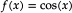The notation f(x) is the standard way to show that it's a function (by convention called f if we're only listing one) and its output changes based on one variable (in this case, x). Change x, and the output for f(x) changes.
So far, so good. Now, let's look at parametric functions, and how they cheat. Let's take the following two functions:
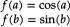There's nothing really remarkable about them, they're just a sine and cosine function, but you'll notice the inputs have different names. If we change the value for a, we're not going to change the output value for f(b), since a isn't used in that function. Parametric functions cheat by changing that. In a parametric function all the different functions share a variable, like this:
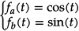Multiple functions, but only one variable. If we change the value for t, we change the outcome of both fa(t) and fb(t). You might wonder how that's useful, and the answer is actually pretty simple: if we change the labels fa(t) and fb(t) with what we usually mean with them for parametric curves, things might be a lot more obvious:
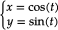There we go. x/y coordinates, linked through some mystery value t.
So, parametric curves don't define a y coordinate in terms of an x coordinate, like normal functions do, but they instead link the values to a "control" variable. If we vary the value of t, then with every change we get two values, which we can use as (x,y) coordinates in a graph. The above set of functions, for instance, generates points on a circle: We can range t from negative to positive infinity, and the resulting (x,y) coordinates will always lie on a circle with radius 1 around the origin (0,0). If we plot it for t from 0 to 5, we get this (use your up and down arrow keys to change the plot end value):
 Scripts are disabled. Showing fallback image.
Scripts are disabled. Showing fallback image.
Bézier curves are just one out of the many classes of parametric functions, and are characterised by using the same base function for all of the output values. In the example we saw above, the x and y values were generated by different functions (one uses a sine, the other a cosine); but Bézier curves use the "binomial polynomial" for both the x and y outputs. So what are binomial polynomials?
You may remember polynomials from high school. They're those sums that look like this:
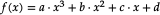If the highest order term they have is x³, they're called "cubic" polynomials; if it's x², it's a "square" polynomial; if it's just x, it's a line (and if there aren't even any terms with x it's not a polynomial!)
Bézier curves are polynomials of t, rather than x, with the value for t being fixed between 0 and 1, with coefficients a, b etc. taking the "binomial" form, which sounds fancy but is actually a pretty simple description for mixing values:
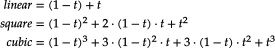I know what you're thinking: that doesn't look too simple! But if we remove t and add in "times one", things suddenly look pretty easy. Check out these binomial terms:
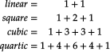Notice that 2 is the same as 1+1, and 3 is 2+1 and 1+2, and 6 is 3+3... As you can see, each time we go up a dimension, we simply start and end with 1, and everything in between is just "the two numbers above it, added together", giving us a simple number sequence known as Pascal's triangle. Now that's easy to remember.
There's an equally simple way to figure out how the polynomial terms work: if we rename (1-t) to a and t to b, and remove the weights for a moment, we get this:
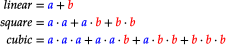It's basically just a sum of "every combination of a and b", progressively replacing a's with b's after every + sign. So that's actually pretty simple too. So now you know binomial polynomials, and just for completeness I'm going to show you the generic function for this:
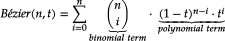And that's the full description for Bézier curves. Σ in this function indicates that this is a series of additions (using the variable listed below the Σ, starting at ...=<value> and ending at the value listed on top of the Σ).
How to implement the basis function
We could naively implement the basis function as a mathematical construct, using the function as our guide, like this:
function Bezier(n,t):
sum = 0
for(k=0; k<n; k++):
sum += n!/(k!*(n-k)!) * (1-t)^(n-k) * t^(k)
return sumI say we could, because we're not going to: the factorial function is incredibly expensive. And, as we can see from the above explanation, we can actually create Pascal's triangle quite easily without it: just start at [1], then [1,1], then [1,2,1], then [1,3,3,1], and so on, with each next row fitting 1 more number than the previous row, starting and ending with "1", with all the numbers in between being the sum of the previous row's elements on either side "above" the one we're computing.
We can generate this as a list of lists lightning fast, and then never have to compute the binomial terms because we have a lookup table:
lut = [ [1], // n=0
[1,1], // n=1
[1,2,1], // n=2
[1,3,3,1], // n=3
[1,4,6,4,1], // n=4
[1,5,10,10,5,1], // n=5
[1,6,15,20,15,6,1]] // n=6
function binomial(n,k):
while(n >= lut.length):
s = lut.length
nextRow = new array(size=s+1)
nextRow[0] = 1
for(i=1, prev=s-1; i<s; i++):
nextRow[i] = lut[prev][i-1] + lut[prev][i]
nextRow[s] = 1
lut.add(nextRow)
return lut[n][k]So what's going on here? First, we declare a lookup table with a size that's reasonably large enough to accommodate most lookups. Then, we declare a function to get us the values we need, and we make sure that if an n/k pair is requested that isn't in the LUT yet, we expand it first. Our basis function now looks like this:
function Bezier(n,t):
sum = 0
for(k=0; k<=n; k++):
sum += binomial(n,k) * (1-t)^(n-k) * t^(k)
return sumPerfect. Of course, we can optimize further. For most computer graphics purposes, we don't need arbitrary curves (although we will also provide code for arbitrary curves in this primer); we need quadratic and cubic curves, and that means we can drastically simplify the code:
function Bezier(2,t):
t2 = t * t
mt = 1-t
mt2 = mt * mt
return mt2 + 2*mt*t + t2
function Bezier(3,t):
t2 = t * t
t3 = t2 * t
mt = 1-t
mt2 = mt * mt
mt3 = mt2 * mt
return mt3 + 3*mt2*t + 3*mt*t2 + t3And now we know how to program the basis function. Excellent.
So, now we know what the basis function looks like, time to add in the magic that makes Bézier curves so special: control points.
Controlling Bézier curvatures
Bézier curves are, like all "splines", interpolation functions. This means that they take a set of points, and generate values somewhere "between" those points. (One of the consequences of this is that you'll never be able to generate a point that lies outside the outline for the control points, commonly called the "hull" for the curve. Useful information!). In fact, we can visualize how each point contributes to the value generated by the function, so we can see which points are important, where, in the curve.
The following graphs show the interpolation functions for quadratic and cubic curves, with "S" being the strength of a point's contribution to the total sum of the Bézier function. Click-and-drag to see the interpolation percentages for each curve-defining point at a specific t value.
 Scripts are disabled. Showing fallback image.
Scripts are disabled. Showing fallback image.
 Scripts are disabled. Showing fallback image.
Scripts are disabled. Showing fallback image.
 Scripts are disabled. Showing fallback image.
Scripts are disabled. Showing fallback image.
Also shown is the interpolation function for a 15th order Bézier function. As you can see, the start and end point contribute considerably more to the curve's shape than any other point in the control point set.
If we want to change the curve, we need to change the weights of each point, effectively changing the interpolations. The way to do this is about as straightforward as possible: just multiply each point with a value that changes its strength. These values are conventionally called "weights", and we can add them to our original Bézier function:
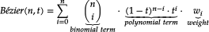That looks complicated, but as it so happens, the "weights" are actually just the coordinate values we want our curve to have: for an nth order curve, w0 is our start coordinate, wn is our last coordinate, and everything in between is a controlling coordinate. Say we want a cubic curve that starts at (120,160), is controlled by (35,200) and (220,260) and ends at (220,40), we use this Bézier curve:
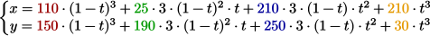Which gives us the curve we saw at the top of the article:
Scripts are disabled. Showing fallback image.
What else can we do with Bézier curves? Quite a lot, actually. The rest of this article covers a multitude of possible operations and algorithms that we can apply, and the tasks they achieve.
How to implement the weighted basis function
Given that we already know how to implement basis function, adding in the control points is remarkably easy:
function Bezier(n,t,w[]):
sum = 0
for(k=0; k<=n; k++):
sum += w[k] * binomial(n,k) * (1-t)^(n-k) * t^(k)
return sumAnd now for the extremely optimized versions:
function Bezier(2,t,w[]):
t2 = t * t
mt = 1-t
mt2 = mt * mt
return w[0]*mt2 + w[1]*2*mt*t + w[2]*t2
function Bezier(3,t,w[]):
t2 = t * t
t3 = t2 * t
mt = 1-t
mt2 = mt * mt
mt3 = mt2 * mt
return w[0]*mt3 + 3*w[1]*mt2*t + 3*w[2]*mt*t2 + w[3]*t3And now we know how to program the weighted basis function.
Controlling Bézier curvatures, part 2: Rational Béziers
We can further control Bézier curves by "rationalising" them: that is, adding a "ratio" value in addition to the weight value discussed in the previous section, thereby gaining control over "how strongly" each coordinate influences the curve.
Adding these ratio values to the regular Bézier curve function is fairly easy. Where the regular function is the following:

The function for rational Bézier curves has two more terms:
In this, the first new term represents an additional weight for each
coordinate. For example, if our ratio values are [1, 0.5, 0.5, 1]
then ratio0 = 1,
ratio1 = 0.5, and so on, and is effectively
identical as if we were just using different weight. So far, nothing
too special.
However, the second new term is what makes the difference: every point on the curve isn't just a "double weighted" point, it is a fraction of the "doubly weighted" value we compute by introducing that ratio. When computing points on the curve, we compute the "normal" Bézier value and then divide that by the Bézier value for the curve that only uses ratios, not weights.
This does something unexpected: it turns our polynomial into something that isn't a polynomial anymore. It is now a kind of curve that is a super class of the polynomials, and can do some really cool things that Bézier curves can't do "on their own", such as perfectly describing circles (which we'll see in a later section is literally impossible using standard Bézier curves).
But the best way to show what this does is to do literally that: let's look at the effect of "rationalising" our Bézier curves using an interactive graphic for a rationalised curves. The following graphic shows the Bézier curve from the previous section, "enriched" with ratio factors for each coordinate. The closer to zero we set one or more terms, the less relative influence the associated coordinate exerts on the curve (and of course the higher we set them, the more influence they have). Try to change the values and see how it affects what gets drawn:
 Scripts are disabled. Showing fallback image.
Scripts are disabled. Showing fallback image.
ratio 2 1.0
ratio 3 1.0
ratio 4 1.0
You can think of the ratio values as each coordinate's "gravity": the higher the gravity, the closer to that coordinate the curve will want to be. You'll also notice that if you simply increase or decrease all the ratios by the same amount, nothing changes... much like with gravity, if the relative strengths stay the same, nothing really changes. The values define each coordinate's influence relative to all other points.
How to implement rational curves
Extending the code of the previous section to include ratios is almost trivial:
function RationalBezier(2,t,w[],r[]):
t2 = t * t
mt = 1-t
mt2 = mt * mt
f = [
r[0] * mt2,
2 * r[1] * mt * t,
r[2] * t2
]
basis = f[0] + f[1] + f[2]
return (f[0] * w[0] + f[1] * w[1] + f[2] * w[2])/basis
function RationalBezier(3,t,w[],r[]):
t2 = t * t
t3 = t2 * t
mt = 1-t
mt2 = mt * mt
mt3 = mt2 * mt
f = [
r[0] * mt3,
3 * r[1] * mt2 * t,
3 * r[2] * mt * t2,
r[3] * t3
]
basis = f[0] + f[1] + f[2] + f[3]
return (f[0] * w[0] + f[1] * w[1] + f[2] * w[2] + f[3] * w[3])/basisAnd that's all we have to do.
The Bézier interval [0,1]
Now that we know the mathematics behind Bézier curves, there's one
curious thing that you may have noticed: they always run from
t=0 to t=1. Why that particular interval?
It all has to do with how we run from "the start" of our curve to "the end" of our curve. If we have a value that is a mixture of two other values, then the general formula for this is:
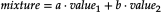
The obvious start and end values here need to be
a=1, b=0, so that the mixed value is 100% value 1, and
0% value 2, and a=0, b=1, so that the mixed value is 0%
value 1 and 100% value 2. Additionally, we don't want "a" and "b" to
be independent: if they are, then we could just pick whatever values
we like, and end up with a mixed value that is, for example, 100%
value 1 and 100% value 2. In principle that's fine,
but for Bézier curves we always want mixed values
between the start and end point, so we need to make sure we
can never set "a" and "b" to some values that lead to a mix value
that sums to more than 100%. And that's easy:
With this we can guarantee that we never sum above 100%. By
restricting a to values in the interval [0,1], we will
always be somewhere between our two values (inclusively), and we
will always sum to a 100% mix.
But... what if we use this form, which is based on the assumption that we will only ever use values between 0 and 1, and instead use values outside of that interval? Do things go horribly wrong? Well... not really, but we get to "see more".
In the case of Bézier curves, extending the interval simply makes our curve "keep going". Bézier curves are simply segments of some polynomial curve, so if we pick a wider interval we simply get to see more of the curve. So what do they look like?
The following two graphics show you Bézier curves rendered "the
usual way", as well as the curves they "lie on" if we were to extend
the t values much further. As you can see, there's a
lot more "shape" hidden in the rest of the curve, and we can model
those parts by moving the curve points around.
 Scripts are disabled. Showing fallback image.
Scripts are disabled. Showing fallback image.
 Scripts are disabled. Showing fallback image.
Scripts are disabled. Showing fallback image.
In fact, there are curves used in graphics design and computer modelling that do the opposite of Bézier curves; rather than fixing the interval, and giving you freedom to choose the coordinates, they fix the coordinates, but give you freedom over the interval. A great example of this is the "Spiro" curve, which is a curve based on part of a Cornu Spiral, also known as Euler's Spiral. It's a very aesthetically pleasing curve and you'll find it in quite a few graphics packages like FontForge and Inkscape. It has even been used in font design, for example for the Inconsolata typeface.
Bézier curvatures as matrix operations
We can also represent Bézier curves as matrix operations, by expressing the Bézier formula as a polynomial basis function and a coefficients matrix, and the actual coordinates as a matrix. Let's look at what this means for the cubic curve, using P... to refer to coordinate values "in one or more dimensions":
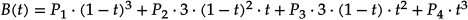Disregarding our actual coordinates for a moment, we have:
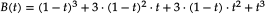We can write this as a sum of four expressions:

And we can expand these expressions:

Furthermore, we can make all the 1 and 0 factors explicit:
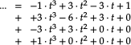And that, we can view as a series of four matrix operations:
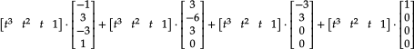If we compact this into a single matrix operation, we get:
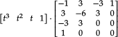
This kind of polynomial basis representation is generally written
with the bases in increasing order, which means we need to flip our
t matrix horizontally, and our big "mixing" matrix
upside down:

And then finally, we can add in our original coordinates as a single third matrix:

We can perform the same trick for the quadratic curve, in which case we end up with:
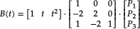
If we plug in a t value, and then multiply the
matrices, we will get exactly the same values as when we evaluate
the original polynomial function, or as when we evaluate the curve
using progressive linear interpolation.
So: why would we bother with matrices? Matrix representations allow us to discover things about functions that would otherwise be hard to tell. It turns out that the curves form triangular matrices, and they have a determinant equal to the product of the actual coordinates we use for our curve. It's also invertible, which means there's a ton of properties that are all satisfied. Of course, the main question is "why is this useful to us now?", and the answer to that is that it's not immediately useful, but you'll be seeing some instances where certain curve properties can be either computed via function manipulation, or via clever use of matrices, and sometimes the matrix approach can be (drastically) faster.
So for now, just remember that we can represent curves this way, and let's move on.
de Casteljau's algorithm
If we want to draw Bézier curves, we can run through all values of
t from 0 to 1 and then compute the weighted basis
function at each value, getting the x/y values we need
to plot. Unfortunately, the more complex the curve gets, the more
expensive this computation becomes. Instead, we can use
de Casteljau's algorithm to draw curves. This is a
geometric approach to curve drawing, and it's really easy to
implement. So easy, in fact, you can do it by hand with a pencil and
ruler.
Rather than using our calculus function to find
x/y values for t, let's do this instead:
-
treat
tas a ratio (which it is). t=0 is 0% along a line, t=1 is 100% along a line. -
Take all lines between the curve's defining points. For an order
ncurve, that'snlines. -
Place markers along each of these line, at distance
t. So iftis 0.2, place the mark at 20% from the start, 80% from the end. -
Now form lines between
thosepoints. This givesn-1lines. -
Place markers along each of these line at distance
t. -
Form lines between
thosepoints. This'll ben-2lines. - Place markers, form lines, place markers, etc.
-
Repeat this until you have only one line left. The point
ton that line coincides with the original curve point att.
To see this in action, mouse-over the following sketch. Moving the mouse changes which curve point is explicitly evaluated using de Casteljau's algorithm, moving the cursor left-to-right (or, of course, right-to-left), shows you how a curve is generated using this approach.
 Scripts are disabled. Showing fallback image.
Scripts are disabled. Showing fallback image.
How to implement de Casteljau's algorithm
Let's just use the algorithm we just specified, and implement that:
function drawCurve(points[], t):
if(points.length==1):
draw(points[0])
else:
newpoints=array(points.size-1)
for(i=0; i<newpoints.length; i++):
newpoints[i] = (1-t) * points[i] + t * points[i+1]
drawCurve(newpoints, t)
And done, that's the algorithm implemented. Except usually you
don't get the luxury of overloading the "+" operator, so let's
also give the code for when you need to work with
x and y values:
function drawCurve(points[], t):
if(points.length==1):
draw(points[0])
else:
newpoints=array(points.size-1)
for(i=0; i<newpoints.length; i++):
x = (1-t) * points[i].x + t * points[i+1].x
y = (1-t) * points[i].y + t * points[i+1].y
newpoints[i] = new point(x,y)
drawCurve(newpoints, t)So what does this do? This draws a point, if the passed list of points is only 1 point long. Otherwise it will create a new list of points that sit at the t ratios (i.e. the "markers" outlined in the above algorithm), and then call the draw function for this new list.
Simplified drawing
We can also simplify the drawing process by "sampling" the curve at certain points, and then joining those points up with straight lines, a process known as "flattening", as we are reducing a curve to a simple sequence of straight, "flat" lines.
We can do this is by saying "we want X segments", and then sampling the curve at intervals that are spaced such that we end up with the number of segments we wanted. The advantage of this method is that it's fast: instead of evaluating 100 or even 1000 curve coordinates, we can sample a much lower number and still end up with a curve that sort-of-kind-of looks good enough. The disadvantage of course is that we lose the precision of working with "the real curve", so we usually can't use the flattened for for doing true intersection detection, or curvature alignment.
 Scripts are disabled. Showing fallback image.
Scripts are disabled. Showing fallback image.
 Scripts are disabled. Showing fallback image.
Scripts are disabled. Showing fallback image.
Try clicking on the sketch and using your up and down arrow keys to lower the number of segments for both the quadratic and cubic curve. You'll notice that for certain curvatures, a low number of segments works quite well, but for more complex curvatures (try this for the cubic curve), a higher number is required to capture the curvature changes properly.
How to implement curve flattening
Let's just use the algorithm we just specified, and implement that:
function flattenCurve(curve, segmentCount):
step = 1/segmentCount;
coordinates = [curve.getXValue(0), curve.getYValue(0)]
for(i=1; i <= segmentCount; i++):
t = i*step;
coordinates.push[curve.getXValue(t), curve.getYValue(t)]
return coordinates;And done, that's the algorithm implemented. That just leaves drawing the resulting "curve" as a sequence of lines:
function drawFlattenedCurve(curve, segmentCount):
coordinates = flattenCurve(curve, segmentCount)
coord = coordinates[0], _coord;
for(i=1; i < coordinates.length; i++):
_coord = coordinates[i]
line(coord, _coord)
coord = _coordWe start with the first coordinate as reference point, and then just draw lines between each point and its next point.
Splitting curves
Using de Casteljau's algorithm, we can also find all the points we
need to split up a Bézier curve into two, smaller curves, which
taken together form the original curve. When we construct de
Casteljau's skeleton for some value t, the procedure
gives us all the points we need to split a curve at that
t value: one curve is defined by all the inside
skeleton points found prior to our on-curve point, with the other
curve being defined by all the inside skeleton points after our
on-curve point.
 Scripts are disabled. Showing fallback image.
Scripts are disabled. Showing fallback image.
implementing curve splitting
We can implement curve splitting by bolting some extra logging onto the de Casteljau function:
left=[]
right=[]
function drawCurve(points[], t):
if(points.length==1):
left.add(points[0])
right.add(points[0])
draw(points[0])
else:
newpoints=array(points.size-1)
for(i=0; i<newpoints.length; i++):
if(i==0):
left.add(points[i])
if(i==newpoints.length-1):
right.add(points[i+1])
newpoints[i] = (1-t) * points[i] + t * points[i+1]
drawCurve(newpoints, t)
After running this function for some value t, the
left and right arrays will contain all
the coordinates for two new curves - one to the "left" of our
t value, the other on the "right". These new curves
will have the same order as the original curve, and can be
overlaid exactly on the original curve.
Splitting curves using matrices
Another way to split curves is to exploit the matrix representation of a Bézier curve. In the section on matrices, we saw that we can represent curves as matrix multiplications. Specifically, we saw these two forms for the quadratic and cubic curves respectively: (we'll reverse the Bézier coefficients vector for legibility)
and

Let's say we want to split the curve at some point
t = z, forming two new (obviously smaller) Bézier
curves. To find the coordinates for these two Bézier curves, we can
use the matrix representation and some linear algebra. First, we
separate out the actual "point on the curve" information into a new
matrix multiplication:
and
If we could compact these matrices back to the form
[t values] · [Bézier matrix] · [column matrix],
with the first two staying the same, then that column matrix on the
right would be the coordinates of a new Bézier curve that describes
the first segment, from t = 0 to t = z. As
it turns out, we can do this quite easily, by exploiting some simple
rules of linear algebra (and if you don't care about the
derivations, just skip to the end of the box for the results!).
Deriving new hull coordinates
Deriving the two segments upon splitting a curve takes a few steps, and the higher the curve order, the more work it is, so let's look at the quadratic curve first:
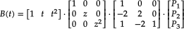 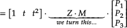 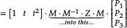 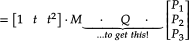We can do this because [M · M-1] is the identity matrix. It's a bit like multiplying something by x/x in calculus: it doesn't do anything to the function, but it does allow you to rewrite it to something that may be easier to work with, or can be broken up differently. In the same way, multiplying our matrix by [M · M-1] has no effect on the total formula, but it does allow us to change the matrix sequence [something · M] to a sequence [M · something], and that makes a world of difference: if we know what [M-1 · Z · M] is, we can apply that to our coordinates, and be left with a proper matrix representation of a quadratic Bézier curve (which is [T · M · P]), with a new set of coordinates that represent the curve from t = 0 to t = z. So let's get computing:
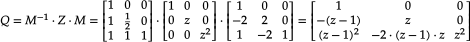Excellent! Now we can form our new quadratic curve:
 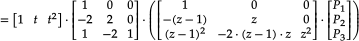
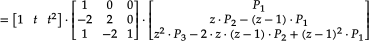
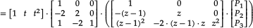
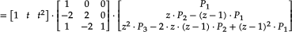
Brilliant: if we want a subcurve from t = 0 to
t = z, we can keep the first coordinate the same
(which makes sense), our control point becomes a z-ratio mixture
of the original control point and the start point, and the new end
point is a mixture that looks oddly similar to a
Bernstein polynomial
of degree two. These new coordinates are actually really easy to
compute directly!
Of course, that's only one of the two curves. Getting the section
from t = z to t = 1 requires doing this
again. We first observe that in the previous calculation, we
actually evaluated the general interval [0,z]. We
were able to write it down in a more simple form because of the
zero, but what we actually evaluated, making the zero
explicit, was:
If we want the interval [z,1], we will be evaluating this instead:


We're going to do the same trick of multiplying by the identity
matrix, to turn [something · M] into
[M · something]:
So, our final second curve looks like:
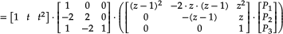
Nice. We see the same thing as before: we can keep the last coordinate the same (which makes sense); our control point becomes a z-ratio mixture of the original control point and the end point, and the new start point is a mixture that looks oddly similar to a bernstein polynomial of degree two, except this time it uses (z-1) rather than (1-z). These new coordinates are also really easy to compute directly!
So, using linear algebra rather than de Casteljau's algorithm, we
have determined that, for any quadratic curve split at some value
t = z, we get two subcurves that are described as
Bézier curves with simple-to-derive coordinates:
and

We can do the same for cubic curves. However, I'll spare you the actual derivation (don't let that stop you from writing that out yourself, though) and simply show you the resulting new coordinate sets:

and

So, looking at our matrices, did we really need to compute the second segment matrix? No, we didn't. Actually having one segment's matrix means we implicitly have the other: push the values of each row in the matrix Q to the right, with zeroes getting pushed off the right edge and appearing back on the left, and then flip the matrix vertically. Presto, you just "calculated" Q'.
Implementing curve splitting this way requires less recursion, and is just straight arithmetic with cached values, so can be cheaper on systems where recursion is expensive. If you're doing computation with devices that are good at matrix multiplication, chopping up a Bézier curve with this method will be a lot faster than applying de Casteljau.
Lowering and elevating curve order
One interesting property of Bézier curves is that an nth order curve can always be perfectly represented by an (n+1)th order curve, by giving the higher-order curve specific control points.
If we have a curve with three points, then we can create a curve with four points that exactly reproduces the original curve. First, we give it the same start and end points, and for its two control points we pick "1/3rd start + 2/3rd control" and "2/3rd control + 1/3rd end". Now we have exactly the same curve as before, except represented as a cubic curve rather than a quadratic curve.
The general rule for raising an nth order curve to an (n+1)th order curve is as follows (observing that the start and end weights are the same as the start and end weights for the old curve):
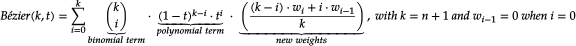However, this rule also has as direct consequence that you cannot generally safely lower a curve from nth order to (n-1)th order, because the control points cannot be "pulled apart" cleanly. We can try to, but the resulting curve will not be identical to the original, and may in fact look completely different.
However, there is a surprisingly good way to ensure that a lower order curve looks "as close as reasonably possible" to the original curve: we can optimise the "least-squares distance" between the original curve and the lower order curve, in a single operation (also explained over on Sirver's Castle). However, to use it, we'll need to do some calculus work and then switch over to linear algebra. As mentioned in the section on matrix representations, some things can be done much more easily with matrices than with calculus functions, and this is one of those things. So... let's go!
We start by taking the standard Bézier function, and condensing it a little:
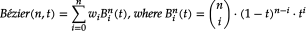
Then, we apply one of those silly (actually, super useful) calculus
tricks: since our t value is always between zero and
one (inclusive), we know that (1-t) plus
t always sums to 1. As such, we can express any value
as a sum of t and 1-t:
So, with that seemingly trivial observation, we rewrite that Bézier
function by splitting it up into a sum of a (1-t) and
t component:
So far so good. Now, to see why we did this, let's write out the
(1-t) and t parts, and see what that gives
us. I promise, it's about to make sense. We start with
(1-t):
So by using this seemingly silly trick, we can suddenly express part
of our nth order Bézier function in terms of an (n+1)th
order Bézier function. And that sounds a lot like raising the curve
order! Of course we need to be able to repeat that trick for the
t part, but that's not a problem:
So, with both of those changed from an order
n expression to an order (n+1) expression,
we can put them back together again. Now, where the order
n function had a summation from 0 to n,
the order n+1 function uses a summation from 0 to
n+1, but this shouldn't be a problem as long as we can
add some new terms that "contribute nothing". In the next section on
derivatives, there is a discussion about why "higher terms than
there is a binomial for" and "lower than zero terms" both
"contribute nothing". So as long as we can add terms that have the
same form as the terms we need, we can just include them in the
summation, they'll sit there and do nothing, and the resulting
function stays identical to the lower order curve.
Let's do this:
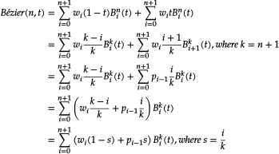And this is where we switch over from calculus to linear algebra, and matrices: we can now express this relation between Bézier(n,t) and Bézier(n+1,t) as a very simple matrix multiplication:
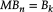
where the matrix M is an n+1 by
n matrix, and looks like:
That might look unwieldy, but it's really just a mostly-zeroes matrix, with a very simply fraction on the diagonal, and an even simpler fraction to the left of it. Multiplying a list of coordinates with this matrix means we can plug the resulting transformed coordinates into the one-order-higher function and get an identical looking curve.
Not too bad!
Equally interesting, though, is that with this matrix operation established, we can now use an incredibly powerful and ridiculously simple way to find out a "best fit" way to reverse the operation, called the normal equation. What it does is minimize the sum of the square differences between one set of values and another set of values. Specifically, if we can express that as some function A x = b, we can use it. And as it so happens, that's exactly what we're dealing with, so:
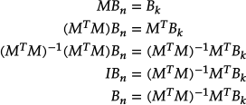The steps taken here are:
- We have a function in a form that the normal equation can be used with, so
- apply the normal equation!
- Then, we want to end up with just Bn on the left, so we start by left-multiply both sides such that we'll end up with lots of stuff on the left that simplified to "a factor 1", which in matrix maths is the identity matrix.
- In fact, by left-multiplying with the inverse of what was already there, we've effectively "nullified" (but really, one-inified) that big, unwieldy block into the identity matrix I. So we substitute the mess with I, and then
- because multiplication with the identity matrix does nothing (like multiplying by 1 does nothing in regular algebra), we just drop it.
And we're done: we now have an expression that lets us approximate
an n+1th order curve with a lower
nth order curve. It won't be an exact fit,
but it's definitely a best approximation. So, let's implement these
rules for raising and lowering curve order to a (semi) random curve,
using the following graphic. Select the sketch, which has movable
control points, and press your up and down arrow keys to raise or
lower the curve order.
 Scripts are disabled. Showing fallback image.
Scripts are disabled. Showing fallback image.
Derivatives
There's a number of useful things that you can do with Bézier curves based on their derivative, and one of the more amusing observations about Bézier curves is that their derivatives are, in fact, also Bézier curves. In fact, the differentiation of a Bézier curve is relatively straightforward, although we do need a bit of math.
First, let's look at the derivative rule for Bézier curves, which is:

which we can also write (observing that b in this formula is the same as our w weights, and that n times a summation is the same as a summation where each term is multiplied by n) as:

Or, in plain text: the derivative of an nth degree Bézier curve is an (n-1)th degree Bézier curve, with one fewer term, and new weights w'0...w'n-1 derived from the original weights as n(wi+1 - wi). So for a 3rd degree curve, with four weights, the derivative has three new weights: w'0 = 3(w1-w0), w'1 = 3(w2-w1) and w'2 = 3(w3-w2).
"Slow down, why is that true?"
Sometimes just being told "this is the derivative" is nice, but you might want to see why this is indeed the case. As such, let's have a look at the proof for this derivative. First off, the weights are independent of the full Bézier function, so the derivative involves only the derivative of the polynomial basis function. So, let's find that:
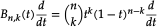Applying the product and chain rules gives us:
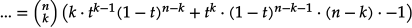Which is hard to work with, so let's expand that properly:

Now, the trick is to turn this expression into something that has binomial coefficients again, so we want to end up with things that look like "x! over y!(x-y)!". If we can do that in a way that involves terms of n-1 and k-1, we'll be on the right track.

And that's the first part done: the two components inside the parentheses are actually regular, lower-order Bézier expressions:

Now to apply this to our weighted Bézier curves. We'll write out the plain curve formula that we saw earlier, and then work our way through to its derivative:

If we expand this (with some color to show how terms line up), and reorder the terms by increasing values for k we see the following:
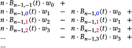Two of these terms fall way: the first term falls away because there is no -1st term in a summation. As such, it always contributes "nothing", so we can safely completely ignore it for the purpose of finding the derivative function. The other term is the very last term in this expansion: one involving Bn-1,n. This term would have a binomial coefficient of [i choose i+1], which is a non-existent binomial coefficient. Again, this term would contribute "nothing", so we can ignore it, too. This means we're left with:
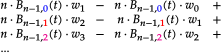And that's just a summation of lower order curves:

We can rewrite this as a normal summation, and we're done:
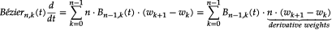Let's rewrite that in a form similar to our original formula, so we can see the difference. We will first list our original formula for Bézier curves, and then the derivative:
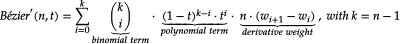What are the differences? In terms of the actual Bézier curve, virtually nothing! We lowered the order (rather than n, it's now n-1), but it's still the same Bézier function. The only real difference is in how the weights change when we derive the curve's function. If we have four points A, B, C, and D, then the derivative will have three points, the second derivative two, and the third derivative one:

We can keep performing this trick for as long as we have more than one weight. Once we have one weight left, the next step will see k = 0, and the result of our "Bézier function" summation is zero, because we're not adding anything at all. As such, a quadratic curve has no second derivative, a cubic curve has no third derivative, and generalized: an nth order curve has n-1 (meaningful) derivatives, with any further derivative being zero.
Tangents and normals
If you want to move objects along a curve, or "away from" a curve, the two vectors you're most interested in are the tangent vector and normal vector for curve points. These are actually really easy to find. For moving and orienting along a curve, we use the tangent, which indicates the direction of travel at specific points, and is literally just the first derivative of our curve:
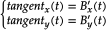This gives us the directional vector we want. We can normalize it to give us uniform directional vectors (having a length of 1.0) at each point, and then do whatever it is we want to do based on those directions:
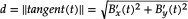 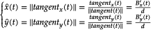The tangent is very useful for moving along a line, but what if we want to move away from the curve instead, perpendicular to the curve at some point t? In that case we want the normal vector. This vector runs at a right angle to the direction of the curve, and is typically of length 1.0, so all we have to do is rotate the normalized directional vector and we're done:
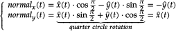Rotating coordinates is actually very easy, if you know the rule for it. You might find it explained as "applying a rotation matrix, which is what we'll look at here, too. Essentially, the idea is to take the circles over which we can rotate, and simply "sliding the coordinates" over these circles by the desired angle. If we want a quarter circle turn, we take the coordinate, slide it along the cirle by a quarter turn, and done.
To turn any point (x,y) into a rotated point (x',y') (over 0,0) by some angle φ, we apply this nice and easy computation:
Which is the "long" version of the following matrix transformation:
And that's all we need to rotate any coordinate. Note that for quarter, half, and three-quarter turns these functions become even easier, since sin and cos for these angles are, respectively: 0 and 1, -1 and 0, and 0 and -1.
But why does this work? Why this matrix multiplication? Wikipedia (technically, Thomas Herter and Klaus Lott) tells us that a rotation matrix can be treated as a sequence of three (elementary) shear operations. When we combine this into a single matrix operation (because all matrix multiplications can be collapsed), we get the matrix that you see above. DataGenetics have an excellent article about this very thing: it's really quite cool, and I strongly recommend taking a quick break from this primer to read that article.
The following two graphics show the tangent and normal along a quadratic and cubic curve, with the direction vector coloured blue, and the normal vector coloured red (the markers are spaced out evenly as t-intervals, not spaced equidistant).
 Scripts are disabled. Showing fallback image.
Scripts are disabled. Showing fallback image.
 Scripts are disabled. Showing fallback image.
Scripts are disabled. Showing fallback image.
Working with 3D normals
Before we move on to the next section we need to spend a little bit of time on the difference between 2D and 3D. While for many things this difference is irrelevant and the procedures are identical (for instance, getting the 3D tangent is just doing what we do for 2D, but for x, y, and z, instead of just for x and y), when it comes to normals things are a little more complex, and thus more work. Mind you, it's not "super hard", but there are more steps involved and we should have a look at those.
Getting normals in 3D is in principle the same as in 2D: we take the normalised tangent vector, and then rotate it by a quarter turn. However, this is where things get that little more complex: we can turn in quite a few directions, since "the normal" in 3D is a plane, not a single vector, so we basically need to define what "the" normal is in the 3D case.
The "naïve" approach is to construct what is known as the Frenet normal, where we follow a simple recipe that works in many cases (but does super bizarre things in some others). The idea is that even though there are infinitely many vectors that are perpendicular to the tangent (i.e. make a 90 degree angle with it), the tangent itself sort of lies on its own plane already: since each point on the curve (no matter how closely spaced) has its own tangent vector, we can say that each point lies in the same plane as the local tangent, as well as the tangents "right next to it".
Even if that difference in tangent vectors is minute, "any difference" is all we need to find out what that plane is - or rather, what the vector perpendicular to that plane is. Which is what we need: if we can calculate that vector, and we have the tangent vector that we know lies on a plane, then we can rotate the tangent vector over the perpendicular, and presto. We have computed the normal using the same logic we used for the 2D case: "just rotate it 90 degrees".
So let's do that! And in a twist surprise, we can do this in four lines:
- a = normalize(B'(t))
- b = normalize(a + B''(t))
- r = normalize(b × a)
- normal = normalize(r × a)
Let's unpack that a little:
- We start by taking the normalized vector for the derivative at some point on the curve. We normalize it so the maths is less work. Less work is good.
- Then, we compute b which represents what a next point's tangent would be if the curve stopped changing at our point and just had the same derivative and second derivative from that point on.
- This lets us find two vectors (the derivative, and the second derivative added to the derivative) that lie on the same plane, which means we can use them to compute a vector perpendicular to that plane, using an elementary vector operation called the cross product. (Note that while that operation uses the × operator, it's most definitely not a multiplication!) The result of that gives us a vector that we can use as the "axis of rotation" for turning the tangent a quarter circle to get our normal, just like we did in the 2D case.
- Since the cross product lets us find a vector that is perpendicular to some plane defined by two other vectors, and since the normal vector should be perpendicular to the plane that the tangent and the axis of rotation lie in, we can use the cross product a second time, and immediately get our normal vector.
And then we're done, we found "the" normal vector for a 3D curve. Let's see what that looks like for a sample curve, shall we? You can move your cursor across the graphic from left to right, to show the normal at a point with a t value that is based on your cursor position: all the way on the left is 0, all the way on the right = 1, midway is t=0.5, etc:
 Scripts are disabled. Showing fallback image.
Scripts are disabled. Showing fallback image.
However, if you've played with that graphic a bit, you might have noticed something odd. The normal seems to "suddenly twist around" around between t=0.5 and t=0.9... Why is doing that?
As it turns out, it's doing that because that's how the maths works, and that's the problem with Frenet normals: while they are "mathematically correct", they are "practically problematic", and so for any kind of graphics work what we really want is a way to compute normals that just... look good.
Thankfully, Frenet normals are not our only option.
Another option is to take a slightly more algorithmic approach and compute a form of Rotation Minimising Frame (also known as "parallel transport frame" or "Bishop frame") instead, where a "frame" is a set made up of the tangent, the rotational axis, and the normal vector, centered on an on-curve point.
These type of frames are computed based on "the previous frame", so we cannot simply compute these "on demand" for single points, as we could for Frenet frames; we have to compute them for the entire curve. Thankfully, the procedure is pretty simple, and can be performed at the same time that you're building lookup tables for your curve.
The idea is to take a starting "tangent/rotation axis/normal" frame at t=0, and then compute what the next frame "should" look like by applying some rules that yield a good looking next frame. In the case of the RMF paper linked above, those rules are:
- Take a point on the curve for which we know the RM frame already,
- take a next point on the curve for which we don't know the RM frame yet, and
- reflect the known frame onto the next point, by treating the plane through the curve at the point exactly between the next and previous points as a "mirror".
- This gives the next point a tangent vector that's essentially pointing in the opposite direction of what it should be, and a normal that's slightly off-kilter, so:
- reflect the vectors of our "mirrored frame" a second time, but this time using the plane through the "next point" itself as "mirror".
- Done: the tangent and normal have been fixed, and we have a good looking frame to work with.
So, let's write some code for that!
Implementing Rotation Minimising Frames
We first assume we have a function for calculating the Frenet frame at a point, which we already discussed above, inn a way that it yields a frame with properties:
{
o: origin of all vectors, i.e. the on-curve point,
t: tangent vector,
r: rotational axis vector,
n: normal vector
}Then, we can write a function that generates a sequence of RM frames in the following manner:
generateRMFrames(steps) -> frames:
step = 1.0/steps
// Start off with the standard tangent/axis/normal frame
// associated with the curve at t=0:
frames.add(getFrenetFrame(0))
// start constructing RM frames:
for t0 = 0, t0 < 1.0, t0 += step:
// start with the previous, known frame
x0 = frames.last
// get the next frame: we're going to keep its position and tangent,
// but we're going to recompute the axis and normal.
t1 = t0 + step
x1 = { o: getPoint(t1), t: getDerivative(t) }
// First we reflect x0's tangent and axis of rotation onto x1,
// through/ the plane of reflection at the point between x0 x1
v1 = x1.o - x0.o
c1 = v1 · v1
riL = x0.r - v1 * 2/c1 * v1 · x0.r
tiL = x0.t - v1 * 2/c1 * v1 · x0.t
// note that v1 is a vector, but 2/c1 and (v1 · ...) are just
// plain numbers, so we're just scaling v1 by some constant.
// Then we reflect a second time, over a plane at x1, so that
// the frame tangent is aligned with the curve tangent again:
v2 = x1.t - tiL
c2 = v2 · v2
// and we're done here:
x1.r = riL - v2 * 2/c2 * v2 · riL
x1.n = x1.r × x1.t
frames.add(x1)Ignoring comments, this is certainly more code than when we were just computing a single Frenet frame, but it's not a crazy amount more code to get much better looking normals.
Speaking of better looking, what does this actually look like? Let's revisit that earlier curve, but this time use rotation minimising frames rather than Frenet frames:
 Scripts are disabled. Showing fallback image.
Scripts are disabled. Showing fallback image.
That looks much better!
For those reading along with the code: we don't even strictly speaking need a Frenet frame to start with: we could, for instance, treat the z-axis as our initial axis of rotation, so that our initial normal is (0,0,1) × tangent, and then take things from there, but having that initial "mathematically correct" frame so that the initial normal seems to line up based on the curve's orientation in 3D space is just nice.
Component functions
One of the first things people run into when they start using Bézier curves in their own programs is "I know how to draw the curve, but how do I determine the bounding box?". It's actually reasonably straightforward to do so, but it requires having some knowledge on exploiting math to get the values we need. For bounding boxes, we aren't actually interested in the curve itself, but only in its "extremities": the minimum and maximum values the curve has for its x- and y-axis values. If you remember your calculus (provided you ever took calculus, otherwise it's going to be hard to remember) we can determine function extremities using the first derivative of that function, but this poses a problem, since our function is parametric: every axis has its own function.
The solution: compute the derivative for each axis separately, and then fit them back together in the same way we do for the original.
Let's look at how a parametric Bézier curve "splits up" into two normal functions, one for the x-axis and one for the y-axis. Note the leftmost figure is again an interactive curve, without labeled axes (you get coordinates in the graph instead). The center and rightmost figures are the component functions for computing the x-axis value, given a value for t (between 0 and 1 inclusive), and the y-axis value, respectively.
If you move points in a curve sideways, you should only see the middle graph change; likewise, moving points vertically should only show a change in the right graph.
 Scripts are disabled. Showing fallback image.
Scripts are disabled. Showing fallback image.
 Scripts are disabled. Showing fallback image.
Scripts are disabled. Showing fallback image.
Finding extremities: root finding
Now that we understand (well, superficially anyway) the component functions, we can find the extremities of our Bézier curve by finding maxima and minima on the component functions, by solving the equations B'(t) = 0 and B''(t) = 0. That said, in the case of quadratic curves there is no B''(t), so we only need to compute B'(t) = 0. So, how do we compute the first and second derivatives? Fairly easily, actually, until our derivatives are 4th order or higher... then things get really hard. But let's start simple:
Quadratic curves: linear derivatives.
Finding the solution for "where is this line 0" should be trivial:
Done. And quadratic curves have no meaningful second derivative, so we're really done.
Cubic curves: the quadratic formula.
The derivative of a cubic curve is a quadratic curve, and finding the roots for a quadratic Bézier curve means we can apply the Quadratic formula. If you've seen it before, you'll remember it, and if you haven't, it looks like this:
So, if we can express a Bézier component function as a plain polynomial, we're done: we just plug in the values into the quadratic formula, check if that square root is negative or not (if it is, there are no roots) and then just compute the two values that come out (because of that plus/minus sign we get two). Any value between 0 and 1 is a root that matters for Bézier curves, anything below or above that is irrelevant (because Bézier curves are only defined over the interval [0,1]). So, how do we convert?
First we turn our cubic Bézier function into a quadratic one, by following the rule mentioned at the end of the derivatives section:
And then, using these v values, we can find out what our a, b, and c should be:
This gives us thee coefficients a, b, and c that are expressed in terms of v values, where the v values are just convenient expressions of our original p values, so we can do some trivial substitution to get:
Easy-peasy. We can now almost trivially find the roots by plugging those values into the quadratic formula. We also note that the second derivative of a cubic curve means computing the first derivative of a quadratic curve, and we just saw how to do that in the section above.
Quartic curves: Cardano's algorithm.
Quartic—fourth degree—curves have a cubic function as derivative. Now, cubic functions are a bit of a problem because they're really hard to solve. But, way back in the 16th century, Gerolamo Cardano figured out that even if the general cubic function is really hard to solve, it can be rewritten to a form for which finding the roots is "easy", and then the only hard part is figuring out how to go from that form to the generic form. So:

This is easier because for the "easier formula" we can use regular calculus to find the roots. (As a cubic function, however, it can have up to three roots, but two of those can be complex. For the purpose of Bézier curve extremities, we can completely ignore those complex roots, since our t is a plain real number from 0 to 1.)
So, the trick is to figure out how to turn the first formula into the second formula, and to then work out the maths that gives us the roots. This is explained in detail over at Ken J. Ward's page for solving the cubic equation, so instead of showing the maths, I'm simply going to show the programming code for solving the cubic equation, with the complex roots getting totally ignored.
Implementing Cardano's algorithm for finding all real roots
The "real roots" part is fairly important, because while you cannot take a square, cube, etc. root of a negative number in the "real" number space (denoted with ℝ), this is perfectly fine in the "complex" number space (denoted with ℂ). And, as it so happens, Cardano is also attributed as the first mathematician in history to have made use of complex numbers in his calculations. For this very algorithm!
// A helper function to filter for values in the [0,1] interval:
function accept(t) {
return 0<=t && t <=1;
}
// A real-cuberoots-only function:
function cuberoot(v) {
if(v<0) return -pow(-v,1/3);
return pow(v,1/3);
}
// Now then: given cubic coordinates {pa, pb, pc, pd} find all roots.
function getCubicRoots(pa, pb, pc, pd) {
var a = (3*pa - 6*pb + 3*pc),
b = (-3*pa + 3*pb),
c = pa,
d = (-pa + 3*pb - 3*pc + pd);
// do a check to see whether we even need cubic solving:
if (approximately(d,0)) {
// this is not a cubic curve.
if (approximately(a,0)) {
// in fact, this is not a quadratic curve either.
if (approximately(b,0)) {
// in fact in fact, there are no solutions.
return [];
}
// linear solution
return [-c / b].filter(accept);
}
// quadratic solution
var q = sqrt(b*b - 4*a*c), 2a = 2*a;
return [(q-b)/2a, (-b-q)/2a].filter(accept)
}
// at this point, we know we need a cubic solution.
a /= d;
b /= d;
c /= d;
var p = (3*b - a*a)/3,
p3 = p/3,
q = (2*a*a*a - 9*a*b + 27*c)/27,
q2 = q/2,
discriminant = q2*q2 + p3*p3*p3;
// and some variables we're going to use later on:
var u1, v1, root1, root2, root3;
// three possible real roots:
if (discriminant < 0) {
var mp3 = -p/3,
mp33 = mp3*mp3*mp3,
r = sqrt( mp33 ),
t = -q / (2*r),
cosphi = t<-1 ? -1 : t>1 ? 1 : t,
phi = acos(cosphi),
crtr = cuberoot(r),
t1 = 2*crtr;
root1 = t1 * cos(phi/3) - a/3;
root2 = t1 * cos((phi+2*pi)/3) - a/3;
root3 = t1 * cos((phi+4*pi)/3) - a/3;
return [root1, root2, root3].filter(accept);
}
// three real roots, but two of them are equal:
if(discriminant === 0) {
u1 = q2 < 0 ? cuberoot(-q2) : -cuberoot(q2);
root1 = 2*u1 - a/3;
root2 = -u1 - a/3;
return [root1, root2].filter(accept);
}
// one real root, two complex roots
var sd = sqrt(discriminant);
u1 = cuberoot(sd - q2);
v1 = cuberoot(sd + q2);
root1 = u1 - v1 - a/3;
return [root1].filter(accept);
}And that's it. The maths is complicated, but the code is pretty much just "follow the maths, while caching as many values as we can to reduce recomputing things as much as possible" and now we have a way to find all roots for a cubic function and can just move on with using that to find extremities of our curves.
Quintic and higher order curves: finding numerical solutions
The problem with this is that as the order of the curve goes up, we can't actually solve those equations the normal way. We can't take the function, and then work out what the solutions are. Not to mention that even solving a third order derivative (for a fourth order curve) is already a royal pain in the backside. We need a better solution. We need numerical approaches.
That's a fancy word for saying "rather than solve the function, treat the problem as a sequence of identical operations, the performing of which gets us closer and closer to the real answer". As it turns out, there is a really nice numerical root-finding algorithm, called the Newton-Raphson root finding method (yes, after that Newton), which we can make use of.
The Newton-Raphson approach consists of picking a value t (any value will do), and getting the corresponding value of the function at that t value. For normal functions, we can treat that value as a height. If the height is zero, we're done, we have found a root. If it's not, we take the tangent of the curve at that point, and extend it until it passes the x-axis, which will be at some new point t. We then repeat the procedure with this new value, and we keep doing this until we find our root.
Mathematically, this means that for some t, at step n=1, we perform the following calculation until fy(t) is zero, so that the next t is the same as the one we already have:
(The Wikipedia article has a decent animation for this process, so I'm not adding a sketch for that here unless there are requests for it)
Now, this works well only if we can pick good starting points, and our curve is continuously differentiable and doesn't have oscillations. Glossing over the exact meaning of those terms, the curves we're dealing with conform to those constraints, so as long as we pick good starting points, this will work. So the question is: which starting points do we pick?
As it turns out, Newton-Raphson is so blindingly fast, so we could get away with just not picking: we simply run the algorithm from t=0 to t=1 at small steps (say, 1/200th) and the result will be all the roots we want. Of course, this may pose problems for high order Bézier curves: 200 steps for a 200th order Bézier curve is going to go wrong, but that's okay: there is no reason, ever, to use Bézier curves of crazy high orders. You might use a fifth order curve to get the "nicest still remotely workable" approximation of a full circle with a single Bézier curve, that's pretty much as high as you'll ever need to go.
In conclusion:
So now that we know how to do root finding, we can determine the first and second derivative roots for our Bézier curves, and show those roots overlaid on the previous graphics:
 Scripts are disabled. Showing fallback image.
Scripts are disabled. Showing fallback image.
 Scripts are disabled. Showing fallback image.
Scripts are disabled. Showing fallback image.
Bounding boxes
If we have the extremities, and the start/end points, a simple for-loop that tests for min/max values for x and y means we have the four values we need to box in our curve:
Computing the bounding box for a Bézier curve:
- Find all t value(s) for the curve derivative's x- and y-roots.
- Discard any t value that's lower than 0 or higher than 1, because Bézier curves only use the interval [0,1].
- Determine the lowest and highest value when plugging the values t=0, t=1 and each of the found roots into the original functions: the lowest value is the lower bound, and the highest value is the upper bound for the bounding box we want to construct.
Applying this approach to our previous root finding, we get the following axis-aligned bounding boxes (with all curve extremity points shown on the curve):
 Scripts are disabled. Showing fallback image.
Scripts are disabled. Showing fallback image.
 Scripts are disabled. Showing fallback image.
Scripts are disabled. Showing fallback image.
We can construct even nicer boxes by aligning them along our curve, rather than along the x- and y-axis, but in order to do so we first need to look at how aligning works.
Aligning curves
While there are an incredible number of curves we can define by varying the x- and y-coordinates for the control points, not all curves are actually distinct. For instance, if we define a curve, and then rotate it 90 degrees, it's still the same curve, and we'll find its extremities in the same spots, just at different draw coordinates. As such, one way to make sure we're working with a "unique" curve is to "axis-align" it.
Aligning also simplifies a curve's functions. We can translate (move) the curve so that the first point lies on (0,0), which turns our n term polynomial functions into n-1 term functions. The order stays the same, but we have less terms. Then, we can rotate the curves so that the last point always lies on the x-axis, too, making its coordinate (...,0). This further simplifies the function for the y-component to an n-2 term function. For instance, if we have a cubic curve such as this:
Then translating it so that the first coordinate lies on (0,0), moving all x coordinates by -120, and all y coordinates by -160, gives us:

If we then rotate the curve so that its end point lies on the x-axis, the coordinates (integer-rounded for illustrative purposes here) become:
If we drop all the zero-terms, this gives us:
We can see that our original curve definition has been simplified considerably. The following graphics illustrate the result of aligning our example curves to the x-axis, with the cubic case using the coordinates that were just used in the example formulae:
Tight boxes
With our knowledge of bounding boxes, and curve alignment, We can now form the "tight" bounding box for curves. We first align our curve, recording the translation we performed, "T", and the rotation angle we used, "R". We then determine the aligned curve's normal bounding box. Once we have that, we can map that bounding box back to our original curve by rotating it by -R, and then translating it by -T. We now have nice tight bounding boxes for our curves:
These are, strictly speaking, not necessarily the tightest possible bounding boxes. It is possible to compute the optimal bounding box by determining which spanning lines we need to effect a minimal box area, but because of the parametric nature of Bézier curves this is actually a rather costly operation, and the gain in bounding precision is often not worth it. If there is high demand for it, I'll add a section on how to precisely compute the best fit bounding box, but the maths is fairly grueling and just not really worth spending time on.
Curve inflections
Now that we know how to align a curve, there's one more thing we can calculate: inflection points. Imagine we have a variable size circle that we can slide up against our curve. We place it against the curve and adjust its radius so that where it touches the curve, the curvatures of the curve and the circle are the same, and then we start to slide the circle along the curve - for quadratic curves, we can always do this without the circle behaving oddly: we might have to change the radius of the circle as we slide it along, but it'll always sit against the same side of the curve.
But what happens with cubic curves? Imagine we have an S curve and we place our circle at the start of the curve, and start sliding it along. For a while we can simply adjust the radius and things will be fine, but once we get to the midpoint of that S, something odd happens: the circle "flips" from one side of the curve to the other side, in order for the curvatures to keep matching. This is called an inflection, and we can find out where those happen relatively easily.
What we need to do is solve a simple equation:
What we're saying here is that given the curvature function C(t), we want to know for which values of t this function is zero, meaning there is no "curvature", which will be exactly at the point between our circle being on one side of the curve, and our circle being on the other side of the curve. So what does C(t) look like? Actually something that seems not too hard:
The function C(t) is the cross product between the first and second derivative functions for the parametric dimensions of our curve. And, as already shown, derivatives of Bézier curves are just simpler Bézier curves, with very easy to compute new coefficients, so this should be pretty easy.
However as we've seen in the section on aligning, aligning lets us simplify things a lot, by completely removing the contributions of the first coordinate from most mathematical evaluations, and removing the last y coordinate as well by virtue of the last point lying on the x-axis. So, while we can evaluate C(t) = 0 for our curve, it'll be much easier to first axis-align the curve and then evaluating the curvature function.
Let's derive the full formula anyway
Of course, before we do our aligned check, let's see what happens if we compute the curvature function without axis-aligning. We start with the first and second derivatives, given our basis functions:
And of course the same functions for y:
Asking a computer to now compose the C(t) function for us (and to expand it to a readable form of simple terms) gives us this rather overly complicated set of arithmetic expressions:
That is... unwieldy. So, we note that there are a lot of terms that involve multiplications involving x1, y1, and y4, which would all disappear if we axis-align our curve, which is why aligning is a great idea.
Aligning our curve so that three of the eight coefficients become zero, we end up with the following simple term function for C(t):
That's a lot easier to work with: we see a fair number of terms that we can compute and then cache, giving us the following simplification:
This is a plain quadratic curve, and we know how to solve C(t) = 0; we use the quadratic formula:
We can easily compute this value if the discriminator isn't a negative number (because we only want real roots, not complex roots), and if x is not zero, because divisions by zero are rather useless.
Taking that into account, we compute t, we disregard any t value that isn't in the Bézier interval [0,1], and we now know at which t value(s) our curve will inflect.
Canonical form (for cubic curves)
While quadratic curves are relatively simple curves to analyze, the same cannot be said of the cubic curve. As a curvature is controlled by more than one control point, it exhibits all kinds of features like loops, cusps, odd colinear features, and as many as two inflection points because the curvature can change direction up to three times. Now, knowing what kind of curve we're dealing with means that some algorithms can be run more efficiently than if we have to implement them as generic solvers, so is there a way to determine the curve type without lots of work?
As it so happens, the answer is yes, and the solution we're going to look at was presented by Maureen C. Stone from Xerox PARC and Tony D. deRose from the University of Washington in their joint paper "A Geometric Characterization of Parametric Cubic curves". It was published in 1989, and defines curves as having a "canonical" form (i.e. a form that all curves can be reduced to) from which we can immediately tell what features a curve will have. So how does it work?
The first observation that makes things work is that if we have a cubic curve with four points, we can apply a linear transformation to these points such that three of the points end up on (0,0), (0,1) and (1,1), with the last point then being "somewhere". After applying that transformation, the location of that last point can then tell us what kind of curve we're dealing with. Specifically, we see the following breakdown:
This is a fairly funky image, so let's see how it breaks down. We see the three fixed points at (0,0), (0,1) and (1,1), and then the fourth point is somewhere. Depending on where it is, our curve will have certain features. Namely, if the fourth point is...
-
anywhere on and in the red zone, the curve will either be self-intersecting (yielding a loop), or it will have a sharp discontinuity (yielding a cusp). Anywhere inside the red zone, this will be a loop. We won't know where that loop is (in terms of t values), but we are guaranteed that there is one.
-
on the left (red) edge, the curve will have a cusp. We again don't know where, just that it has one. This edge is described by the function:

-
on the lower right (pink) edge, the curve will have a loop at t=1, so we know the end coordinate of the curve also lies on the curve. This edge is described by the function:
-
on the top (blue) edge, the curve will have a loop at t=0, so we know the start coordinate of the curve also lies on the curve. This edge is described by the function:
-
inside the green zone, the curve will have a single inflection, switching concave/convex once.
-
between the red and green zones, the curve has two inflections, meaning its curvature switches between concave/convex form twice.
-
anywhere on the right of the red zone, the curve will have no inflections. It'll just be a well-behaved arch.
Of course, this map is fairly small, but the regions extend to infinity, with well defined boundaries.
Wait, where do those lines come from?
Without repeating the paper mentioned at the top of this section, the loop-boundaries come from rewriting the curve into canonical form, and then solving the formulae for which constraints must hold for which possible curve properties. In the paper these functions yield formulae for where you will find cusp points, or loops where we know t=0 or t=1, but those functions are derived for the full cubic expression, meaning they apply to t=-∞ to t=∞... For Bézier curves we only care about the "clipped interval" t=0 to t=1, so some of the properties that apply when you look at the curve over an infinite interval simply don't apply to the Bézier curve interval.
The right bound for the loop region, indicating where the curve switches from "having inflections" to "having a loop", for the general cubic curve, is actually mirrored over x=1, but for Bézier curves this right half doesn't apply, so we don't need to pay attention to it. Similarly, the boundaries for t=0 and t=1 loops are also nice clean curves but get "cut off" when we only look at what the general curve does over the interval t=0 to t=1.
For the full details, head over to the paper and read through sections 3 and 4. If you still remember your high school precalculus, you can probably follow along with this paper, although you might have to read it a few times before all the bits "click".
So now the question becomes: how do we manipulate our curve so that it fits this canonical form, with three fixed points, and one "free" point? Enter linear algebra. Don't worry, I'll be doing all the math for you, as well as show you what the effect is on our curves, but basically we're going to be using linear algebra, rather than calculus, because "it's way easier". Sometimes a calculus approach is very hard to work with, when the equivalent geometrical solution is super obvious.
The approach is going to start with a curve that doesn't have all-colinear points (so we need to make sure the points don't all fall on a straight line), and then applying four graphics operations that you will probably have heard of: translation (moving all points by some fixed x- and y-distance), scaling (multiplying all points by some x and y scale factor), and shearing (an operation that turns rectangles into parallelograms).
Step 1: we translate any curve by -p1.x and -p1.y, so that the curve starts at (0,0). We're going to make use of an interesting trick here, by pretending our 2D coordinates are 3D, with the z coordinate simply always being 1. This is an old trick in graphics to overcome the limitations of 2D transformations: without it, we can only turn (x,y) coordinates into new coordinates of the form (ax + by, cx + dy), which means we can't do translation, since that requires we end up with some kind of (x + a, y + b). If we add a bogus z coordinate that is always 1, then we can suddenly add arbitrary values. For example:

Sweet! z stays 1, so we can effectively ignore it entirely, but we added some plain values to our x and y coordinates. So, if we want to subtract p1.x and p1.y, we use:

Running all our coordinates through this transformation gives a new set of coordinates, let's call those U, where the first coordinate lies on (0,0), and the rest is still somewhat free. Our next job is to make sure point 2 ends up lying on the x=0 line, so what we want is a transformation matrix that, when we run it, subtracts x from whatever x we currently have. This is called shearing, and the typical x-shear matrix and its transformation looks like this:

So we want some shearing value that, when multiplied by y, yields -x, so our x coordinate becomes zero. That value is simply -x/y, because *-x/y * y = -x*. Done:

Now, running this on all our points generates a new set of coordinates, let's call those V, which now have point 1 on (0,0) and point 2 on (0, some-value), and we wanted it at (0,1), so we need to do some scaling to make sure it ends up at (0,1). Additionally, we want point 3 to end up on (1,1), so we can also scale x to make sure its x-coordinate will be 1 after we run the transform. That means we'll be x-scaling by 1/point3x, and y-scaling by point2y. This is really easy:

Then, finally, this generates a new set of coordinates, let's call
those W, of which point 1 lies on (0,0), point 2 lies on (0,1), and
point three lies on (1, ...) so all that's left is to make sure
point 3 ends up at (1,1) - but we can't scale! Point 2 is already in
the right place, and y-scaling would move it out of (0,1) again, so
our only option is to y-shear point three, just like how we
x-sheared point 2 earlier. In this case, we do the same trick, but
with y/x rather than x/y because we're not
x-shearing but y-shearing. Additionally, we don't actually want to
end up at zero (which is what we did before) so we need to shear
towards an offset, in this case 1:

And this generates our final set of four coordinates. Of these, we already know that points 1 through 3 are (0,0), (0,1) and (1,1), and only the last coordinate is "free". In fact, given any four starting coordinates, the resulting "transformation mapped" coordinate will be:
That looks very complex, but notice that every coordinate value is being offset by the initial translation, and a lot of terms in there repeat: it's pretty easy to calculate this fast, since there's so much we can cache and reuse while we compute this mapped coordinate!
First, let's just do that translation step as a "preprocessing" operation so we don't have to subtract the values all the time. What does that leave?

Suddenly things look a lot simpler: the mapped x is fairly straight forward to compute, and we see that the mapped y actually contains the mapped x in its entirety, so we'll have that part already available when we need to evaluate it. In fact, let's pull out all those common factors to see just how simple this is:

That's kind of super-simple to write out in code, I think you'll agree. Coding math tends to be easier than the formulae initially make it look!
How do you track all that?
Doing maths can be a pain, so whenever possible, I like to make computers do the work for me. Especially for things like this, I simply use Mathematica. Tracking all this math by hand is insane, and we invented computers, literally, to do this for us. I have no reason to use pen and paper when I can write out what I want to do in a program, and have the program do the math for me. And real math, too, with symbols, not with numbers. In fact, here's the Mathematica notebook if you want to see how this works for yourself.
Now, I know, you're thinking "but Mathematica is super expensive!" and that's true, it's $295 for home use, but it's also free when you buy a $35 raspberry pi. Obviously, I bought a raspberry pi, and I encourage you to do the same. With that, as long as you know what you want to do, Mathematica can just do it for you. And we don't have to be geniuses to work out what the maths looks like. That's what we have computers for.
So, let's write up a sketch that'll show us the canonical form for any curve drawn in blue, overlaid on our canonical map, so that we can immediately tell which features our curve must have, based on where the fourth coordinate is located on the map:
Finding Y, given X
One common task that pops up in things like CSS work, or parametric equalisers, or image leveling, or any other number of applications where Bezier curves are used as control curves in a way that there is really only ever one "y" value associated with one "x" value, you might want to cut out the middle man, as it were, and compute "y" directly based on "x". After all, the function looks simple enough, finding the "y" value should be simple too, right? Unfortunately, not really. However, it is possible and as long as you have some code in place to help, it's not a lot of a work either.
We'll be tackling this problem in two stages: the first, which is
the hard part, is figuring out which "t" value belongs to any given
"x" value. For instance, have a look at the following graphic. On
the left we have a Bezier curve that looks for all intents and
purposes like it fits our criteria: every "x" has one and only one
associated "y" value. On the right we see the function for just the
"x" values: that's a cubic curve, but not a really crazy cubic
curve. If you mouse over the graphic, you will see a red line drawn
that corresponds to the x coordinate under your cursor:
vertical in the left graphic, horizontal in the right.
Now, if you look more closely at that right graphic, you'll notice something interesting: if we treat the red line as "the x axis", then the point where the function crosses our line is really just a root for the cubic function x(t). So... can we just use root finding to get the "t" value associated with an "x" value? To which the answer should unsurprisingly be " yes, we can". Sure, we'll need to compute cubic roots, but we've already seen how to do that in the section on finding extremities, and we're not dealing with a complicated case: we know there is only root, so let's go and find it!
First, let's look at the function for x(t):

We can rewrite this to a plain polynomial form, by just fully writing out the expansion and then collecting the polynomial factors, as:

Nothing special here: that's a standard cubic polynomial in "power"
form (i.e. all the terms are ordered by their power of
t). So, given that a, b,
c, d, and x(t) are
all known constants, we can trivially rewrite this (by moving the
x(t) across the equal sign) as:

You might be wondering "where did all the other 'minus x' for all
the other values a, b, c, and d go?" and the answer there is that
they all cancel out, so the only one we actually need to subtract is
the one at the end. Handy! So now we just... solve this equation: we
know everything except t, we just need some
mathematical insight to tell us how to do this.
...Of course "just" is not the right qualifier here, there is
nothing "just" about finding the roots of a cubic function, but
thankfully we've already covered the tool to do this in the
root finding section: Gerolano Cardano's
solution for cubic roots. Of course, we still need to be a bit
careful, because cubic roots are complicated things: you can get up
to three roots back, even though we only "want" one root. In our
case, only one will be both a real number (as opposed to a complex
number) and lie in the t interval [0,1], so we
need to filter for that:
double x = some value we know!
double[] roots = getTforX(x);
double t;
if (roots.length > 0) {
for (double _t: roots) {
if (_t<0 || _t>1) continue;
t = _t;
break;
}
}
And that's it, we're done: we now have the t value
corresponding to our x, and we can just evaluate our
curve for that t value to find a coordinate that has
our original, known x, and our unknown
y value. Mouse over the following graphic, which
performs this root finding based on a knowledge of which "x" value
we're interested in.
Arc length
How long is a Bézier curve? As it turns out, that's not actually an easy question, because the answer requires maths that —much like root finding— cannot generally be solved the traditional way. If we have a parametric curve with fx(t) and fy(t), then the length of the curve, measured from start point to some point t = z, is computed using the following seemingly straight forward (if a bit overwhelming) formula:

or, more commonly written using Leibnitz notation as:
This formula says that the length of a parametric curve is in fact equal to the area underneath a function that looks a remarkable amount like Pythagoras' rule for computing the diagonal of a straight angled triangle. This sounds pretty simple, right? Sadly, it's far from simple... cutting straight to after the chase is over: for quadratic curves, this formula generates an unwieldy computation, and we're simply not going to implement things that way. For cubic Bézier curves, things get even more fun, because there is no "closed form" solution, meaning that due to the way calculus works, there is no generic formula that allows you to calculate the arc length. Let me just repeat this, because it's fairly crucial: for cubic and higher Bézier curves, there is no way to solve this function if you want to use it "for all possible coordinates".
Seriously: It cannot be done.
So we turn to numerical approaches again. The method we'll look at here is the Gauss quadrature. This approximation is a really neat trick, because for any nth degree polynomial it finds approximated values for an integral really efficiently. Explaining this procedure in length is way beyond the scope of this page, so if you're interested in finding out why it works, I can recommend the University of South Florida video lecture on the procedure, linked in this very paragraph. The general solution we're looking for is the following:
In plain text: an integral function can always be treated as the sum of an (infinite) number of (infinitely thin) rectangular strips sitting "under" the function's plotted graph. To illustrate this idea, the following graph shows the integral for a sinusoid function. The more strips we use (and of course the more we use, the thinner they get) the closer we get to the true area under the curve, and thus the better the approximation:
Now, infinitely many terms to sum and infinitely thin rectangles are not something that computers can work with, so instead we're going to approximate the infinite summation by using a sum of a finite number of "just thin" rectangular strips. As long as we use a high enough number of thin enough rectangular strips, this will give us an approximation that is pretty close to what the real value is.
So, the trick is to come up with useful rectangular strips. A naive way is to simply create n strips, all with the same width, but there is a far better way using special values for C and f(t) depending on the value of n, which indicates how many strips we'll use, and it's called the Legendre-Gauss quadrature.
This approach uses strips that are not spaced evenly, but instead spaces them in a special way based on describing the function as a polynomial (the more strips, the more accurate the polynomial), and then computing the exact integral for that polynomial. We're essentially performing arc length computation on a flattened curve, but flattening it based on the intervals dictated by the Legendre-Gauss solution.
Note that one requirement for the approach we'll use is that the integral must run from -1 to 1. That's no good, because we're dealing with Bézier curves, and the length of a section of curve applies to values which run from 0 to "some value smaller than or equal to 1" (let's call that value z). Thankfully, we can quite easily transform any integral interval to any other integral interval, by shifting and scaling the inputs. Doing so, we get the following:
That may look a bit more complicated, but the fraction involving z is a fixed number, so the summation, and the evaluation of the f(t) values are still pretty simple.
So, what do we need to perform this calculation? For one, we'll need an explicit formula for f(t), because that derivative notation is handy on paper, but not when we have to implement it. We'll also need to know what these Ci and ti values should be. Luckily, that's less work because there are actually many tables available that give these values, for any n, so if we want to approximate our integral with only two terms (which is a bit low, really) then these tables would tell us that for n=2 we must use the following values:

Which means that in order for us to approximate the integral, we must plug these values into the approximate function, which gives us:

We can program that pretty easily, provided we have that f(t) available, which we do, as we know the full description for the Bézier curve functions Bx(t) and By(t).
If we use the Legendre-Gauss values for our C values (thickness for each strip) and t values (location of each strip), we can determine the approximate length of a Bézier curve by computing the Legendre-Gauss sum. The following graphic shows a cubic curve, with its computed lengths; Go ahead and change the curve, to see how its length changes. One thing worth trying is to see if you can make a straight line, and see if the length matches what you'd expect. What if you form a line with the control points on the outside, and the start/end points on the inside?
Approximated arc length
Sometimes, we don't actually need the precision of a true arc length, and we can get away with simply computing the approximate arc length instead. The by far fastest way to do this is to flatten the curve and then simply calculate the linear distance from point to point. This will come with an error, but this can be made arbitrarily small by increasing the segment count.
If we combine the work done in the previous sections on curve flattening and arc length computation, we can implement these with minimal effort:
Try clicking on the sketch and using your up and down arrow keys to lower the number of segments for both the quadratic and cubic curve. You may notice that the error in length is actually pretty significant, even if the percentage is fairly low: if the number of segments used yields an error of 0.1% or higher, the flattened curve already looks fairly obviously flattened. And of course, the longer the curve, the more significant the error will be.
Curvature of a curve
Imagine we have two curves, and we want to line them in up in a way that "looks right". What would we use as metric to let a computer decide what "looks right" means? For instance, we can start by ensuring that the two curves share an end coordinate, so that there is no "gap" between leaving one curve and entering the next, but that won't guarantee that things look right: both curves can be going in wildly different directions, and the resulting joined geometry will have a corner in it, rather than a smooth transition from one curve to the next. What we want is to ensure that the curvature at the transition from one curve to the next "looks good". So, we could have them share an end coordinate, and then ensure that the derivatives for both curves match at that coordinate, and at a casual glance, that seems the perfect solution: if we make the derivatives match, then both the "direction" in which we travel from one curve to the next is the same, and the "speed" at which we travel the curve will be the same.
Problem solved!
But, if we think about this a little more, this cannot possible work, because of something that you may have noticed in the section on reordering curves: what a curve looks like, and the function that draws that curve, are not in some kind of universal, fixed, one-to-one relation. If we have some quadratic curve, then simply by raising the curve order we can get corresponding cubic, quartic, and higher and higher mathematical expressions that all draw the exact same curve but with wildly different derivatives. So: if we want to make a transition from one curve to the next look good, and we want to use the derivative, then we suddenly need to answer the question: "Which derivative?".
How would you even decide? What makes the cubic derivatives better or less suited than, say, quintic derivatives? Wouldn't it be nicer if we could use something that was inherent to the curve, without being tied to the functions that yield that curve? And (of course) as it turns out, there is a way to define curvature in such a way that it only relies on what the curve actually looks like, and given where this section is in the larger body of this Primer, it should hopefully not be surprising that we thing we can use to define curvature is the thing we talked about in the previous section: arc length.
Intuitively, this should make sense, even if we have no idea what the maths would look like: if we travel some fixed distance along some curve, then the point at that distance is simply the point at that distance. It doesn't matter what function we used to draw the curve: once we know what the curve looks like, the function(s) used to draw it become irrelevant: a point a third along the full distance of the curve is simply the point a third along the distance of the curve.
You might think that in order to find the curvature of a curve, we now need to find and then solve the arc length function, and that would be a problem because we just saw that there is no way to actually do that: don't worry, we don't. We do need to know the form of the arc length function, which we saw above, but it's not the thing we're actually interested in, and we're going to be rewriting it in a way that makes most of the crazy complex things about it just... disappear.
In fact, after running through the steps necessary to determine what we're left with if we use the arclength function's derivative (with another run-through of the maths here), rather than the curve's original function's derivative, then the integral disappears entirely (because of the fundamental therem of calculus), and we're left with some surprisingly simple maths that relates curvature (denoted as κ, "kappa") to—and this is the truly surprising bit—a specific combination of derivatives of our original function.
Let me just highlight that before we move on: we calculate the curvature of a curve using the arc length function derivative, because the original function's derivative is entirely unreliable, and in doing so we end up with a formula that expresses curvature in terms of the original function's derivatives.
That's crazy!
But, that's what makes maths such an interesting thing: it can show you that all your assumptions are completely wrong, only to then go "but actually, you were on the right track all along, here: ..." with a solution that is so easy to work with as to almost seem mundane. So: enough of all this text, how do we calculate curvature? What is the function for κ? Concisely, the function is this:
Which is really just a "short form" that glosses over the fact that we're dealing with functions:

And while that's a litte more verbose, it's still just as simple to work with as the first function: the curvature at some point on any (and this cannot be overstated: any) curve is a ratio between the first and second derivative cross product, and something that looks oddly similar to the standard Euclidean distance function. And nothing in these functions is hard to calculate either: for Bézier curves, simply knowing our curve coordinates means we know what the first and second derivatives are, and so evaluating this function for any t value is just a matter of basic arithematics.
Implement the kappa function
In fact, let's just implement it right now:
function kappa(t, B):
d = B.getDerivative()
dd = d.getDerivative()
dx = d.getX(t)
dy = d.getY(t)
ddx = dd.getX(t)
ddy = dd.getY(t)
numerator = dx * ddy - ddx * dy
denominator = pow(dx*dx + dy*dy, 1.5)
return numerator / denominatorThat was easy!
In fact, it stays easy because we can also compute the associated "radius of curvature", which gives us the implicit circle that "fits" the curve's curvature at any point, using what is possibly the simplest relation in this entire primer:
So that's a rather convenient fact to know, too.
So with all of that covered, let's line up some curves! The following graphic gives you two curves that look identical, but use quadratic and cubic functions, respectively. As you can see, despite their derivatives being necessarily different, their curvature (thanks to being derived based on maths that "ignores" specific function derivative, and instead gives a formulat that smooths out any differences) is exactly the same. And because of that, we can put them together such that the point where they overlap has the same curvature for both curves, giving us the smoothest looking transition we could ask for.
One thing you may have noticed in this sketch is that sometimes the curvature looks fine, but seems to be pointing in the wrong direction, making it hard to line up the curves properly. In your code you typically solve this by matching absolute values, but that's not super easy to program visually... however, we can just show the curvature on both sides of the curve, making lining things up a bit easier:
Tracing a curve at fixed distance intervals
Say you want to draw a curve with a dashed line, rather than a solid line, or you want to move something along the curve at fixed distance intervals over time, like a train along a track, and you want to use Bézier curves.
Now you have a problem.
The reason you have a problem is that Bézier curves are parametric functions with non-linear behaviour, whereas moving a train along a track is about as close to a practical example of linear behaviour as you can get. The problem we're faced with is that we can't just pick t values at some fixed interval and expect the Bézier functions to generate points that are spaced a fixed distance apart. In fact, let's look at the relation between "distance long a curve" and "t value", by plotting them against one another.
The following graphic shows a particularly illustrative curve, and it's length-to-t plot. For linear traversal, this line needs to be straight, running from (0,0) to (length,1). This is, it's safe to say, not what we'll see, we'll see something wobbly instead. To make matters even worse, the length-to-t function is also of a much higher order than our curve is: while the curve we're using for this exercise is a cubic curve, which can switch concave/convex form once at best, the plot shows that the distance function along the curve is able to switch forms three times (to see this, try creating an S curve with the start/end close together, but the control points far apart).
We see a function that might be invertible, but we won't be able to do so, symbolically. You may remember from the section on arc length that we cannot actually compute the true arc length function as an expression of t, which means we also can't compute the true inverted function that gives t as an expression of length. So how do we fix this?
One way is to do what the graphic does: simply run through the curve, determine its t-for-length values as a set of discrete values at some high resolution (the graphic uses 100 discrete points), and then use those as a basis for finding an appropriate t value, given a distance along the curve. This works quite well, actually, and is fairly fast.
We can use some colour to show the difference between distance-based and time based intervals: the following graph is similar to the previous one, except it segments the curve in terms of equal-distance intervals. This shows as regular colour intervals going down the graph, but the mapping to t values is not linear, so there will be (highly) irregular intervals along the horizontal axis. It also shows the curve in an alternating colouring based on the t-for-distance values we find our LUT:
Use your up and down arrow keys to increase or decrease the number of equidistant segments used to colour the curve.
However, are there better ways? One such way is discussed in "Moving Along a Curve with Specified Speed" by David Eberly of Geometric Tools, LLC, but basically because we have no explicit length function (or rather, one we don't have to constantly compute for different intervals), you may simply be better off with a traditional lookup table (LUT).
Intersections
Let's look at some more things we will want to do with Bézier curves. Almost immediately after figuring out how to get bounding boxes to work, people tend to run into the problem that even though the minimal bounding box (based on rotation) is tight, it's not sufficient to perform true collision detection. It's a good first step to make sure there might be a collision (if there is no bounding box overlap, there can't be one), but in order to do real collision detection we need to know whether or not there's an intersection on the actual curve.
We'll do this in steps, because it's a bit of a journey to get to curve/curve intersection checking. First, let's start simple, by implementing a line-line intersection checker. While we can solve this the traditional calculus way (determine the functions for both lines, then compute the intersection by equating them and solving for two unknowns), linear algebra actually offers a nicer solution.
Line-line intersections
If we have two line segments with two coordinates each, segments A-B and C-D, we can find the intersection of the lines these segments are an intervals on by linear algebra, using the procedure outlined in this top coder article. Of course, we need to make sure that the intersection isn't just on the lines our line segments lie on, but actually on our line segments themselves. So after we find the intersection, we need to verify that it lies without the bounds of our original line segments.
The following graphic implements this intersection detection, showing a red point for an intersection on the lines our segments lie on (thus being a virtual intersection point), and a green point for an intersection that lies on both segments (being a real intersection point).
Implementing line-line intersections
Let's have a look at how to implement a line-line intersection checking function. The basics are covered in the article mentioned above, but sometimes you need more function signatures, because you might not want to call your function with eight distinct parameters. Maybe you're using point structs for the line. Let's get coding:
lli8 = function(x1,y1,x2,y2,x3,y3,x4,y4):
var nx=(x1*y2-y1*x2)*(x3-x4)-(x1-x2)*(x3*y4-y3*x4),
ny=(x1*y2-y1*x2)*(y3-y4)-(y1-y2)*(x3*y4-y3*x4),
d=(x1-x2)*(y3-y4)-(y1-y2)*(x3-x4);
if d=0:
return false
return point(nx/d, ny/d)
lli4 = function(p1, p2, p3, p4):
var x1 = p1.x, y1 = p1.y,
x2 = p2.x, y2 = p2.y,
x3 = p3.x, y3 = p3.y,
x4 = p4.x, y4 = p4.y;
return lli8(x1,y1,x2,y2,x3,y3,x4,y4)
lli = function(line1, line2):
return lli4(line1.p1, line1.p2, line2.p1, line2.p2)What about curve-line intersections?
Curve/line intersection is more work, but we've already seen the techniques we need to use in order to perform it: first we translate/rotate both the line and curve together, in such a way that the line coincides with the x-axis. This will position the curve in a way that makes it cross the line at points where its y-function is zero. By doing this, the problem of finding intersections between a curve and a line has now become the problem of performing root finding on our translated/rotated curve, as we already covered in the section on finding extremities.
Curve/curve intersection, however, is more complicated. Since we have no straight line to align to, we can't simply align one of the curves and be left with a simple procedure. Instead, we'll need to apply two techniques we've met before: de Casteljau's algorithm, and curve splitting.
Curve/curve intersection
Using de Casteljau's algorithm to split the curve we can now implement curve/curve intersection finding using a "divide and conquer" technique:
- Take two curves C1 and C2, and treat them as a pair.
- If their bounding boxes overlap, split up each curve into two sub-curves
- With C1.1, C1.2, C2.1 and C2.2, form four new pairs (C1.1,C2.1), (C1.1, C2.2), (C1.2,C2.1), and (C1.2,C2.2).
-
For each pair, check whether their bounding boxes overlap.
- If their bounding boxes do not overlap, discard the pair, as there is no intersection between this pair of curves.
- If there is overlap, rerun all steps for this pair.
-
Once the sub-curves we form are so small that they effectively
occupy sub-pixel areas, we consider an intersection found, noting
that we might have a cluster of multiple intersections at the
sub-pixel level, out of which we pick one to act as "found"
tvalue (we can either throw all but one away, we can average the cluster'stvalues, or you can do something even more creative).
This algorithm will start with a single pair, "balloon" until it runs in parallel for a large number of potential sub-pairs, and then taper back down as it homes in on intersection coordinates, ending up with as many pairs as there are intersections.
The following graphic applies this algorithm to a pair of cubic curves, one step at a time, so you can see the algorithm in action. Click the button to run a single step in the algorithm, after setting up your curves in some creative arrangement. The algorithm resets once it's found a solution, so you can try this with lots of different curves (can you find the configuration that yields the maximum number of intersections between two cubic curves? Nine intersections!)
Self-intersection is dealt with in the same way, except we turn a curve into two or more curves first based on the inflection points. We then form all possible curve pairs with the resultant segments, and run exactly the same algorithm. All non-overlapping curve pairs will be removed after the first iteration, and the remaining steps home in on the curve's self-intersection points.
The projection identity
De Casteljau's algorithm is the pivotal algorithm when it comes to Bézier curves. You can use it not just to split curves, but also to draw them efficiently (especially for high-order Bézier curves), as well as to come up with curves based on three points and a tangent. Particularly this last thing is really useful because it lets us "mould" a curve, by picking it up at some point, and dragging that point around to change the curve's shape.
How does that work? Succinctly: we run de Casteljau's algorithm in reverse!
In order to run de Casteljau's algorithm in reverse, we need a few basic things: a start and end point, a point on the curve that want to be moving around, which has an associated t value, and a point we've not explicitly talked about before, and as far as I know has no explicit name, but lives one iteration higher in the de Casteljau process then our on-curve point does. I like to call it "A" for reasons that will become obvious.
So let's use graphics instead of text to see where this "A" is, because text only gets us so far: in the following graphic, click anywhere on the curves to see the identity information that we'll be using to run de Casteljau in reverse (you can manipulate the curve even after picking a point. Note the "ratio" value when you do so: does it change?):
Clicking anywhere on the curves shows us three things:
- our on-curve point; let's call that B,
- a point at the tip of B's "hat", on de Casteljau step up; let's call that A, and
- a point that we get by projecting B onto the start--end baseline; let's call that C.
These three values A, B, and C hide an important identity formula for quadratic and cubic Bézier curves: for any point on the curve with some t value, the ratio distance of C along the baseline is fixed: if some t value sets up a C that is 20% away from the start and 80% away from the end, then it doesn't matter where the start, end, or control points are; for that t value, C will always lie at 20% from the start and 80% from the end point. Go ahead, pick an on-curve point in either graphic and then move all the other points around: if you only move the control points, start and end won't move, and so neither will C, and if you move either start or end point, C will move but its relative position will not change. The following function stays true:

So that just leaves finding A.
While that relation is fixed, the function u(t) differs depending on whether we're working with quadratic or cubic curves:

So, if we know the start and end coordinates, and we know the t value, we know C:
Mouse-over the graphs to see the expression for C, given the t value at the mouse pointer.
There's also another important bit of information that is inherent to the ABC values: while the distances between A and B, and B and C, are dynamic (based on where we put B), the ratio between the two distances is stable. Given some t value, the following always holds:

This leads to a pretty powerful bit of knowledge: merely by knowing the t value of some on curve point, we know where C has to be (as per the above note), and because we know B and C, and thus have the distance between them, we know where A has to be:
And that's it, all values found.
Much like the u(t) function in the above note, the ratio(t) function depends on whether we're looking at quadratic or cubic curves. Their form is intrinsically related to the u(t) function in that they both come rolling out of the same function evaluation, explained over on MathOverflow by Boris Zbarsky and myself. The ratio functions are the "s(t)" functions from the answers there, while the "u(t)" functions have the same name both here and on MathOverflow.

Unfortunately, this trick only works for quadratic and cubic curves. Once we hit higher order curves, things become a lot less predictable; the "fixed point C" is no longer fixed, moving around as we move the control points, and projections of B onto the line between start and end may actually lie on that line before the start, or after the end, and there are no simple ratios that we can exploit.
So: if we know B and its corresponding t value, then we know all the ABC values, which —together with a start and end coordinate— gives us the necessary information to reconstruct a curve's "de Casteljau skeleton", which means that two points and a value between 0 and 1, we can come up with a curve. And that opens up possibilities: curve manipulation by dragging an on-curve point, as well as curve fitting of "a bunch of coordinates". These are useful things, and we'll look at both in the next sections.
Manipulating a curve
Armed with knowledge of the "ABC" relation, we can now update a curve interactively, by letting people click anywhere on the curve, find the t-value matching that coordinate, and then letting them drag that point around. With every drag update we'll have a new point "B", which we can combine with the fixed point "C" to find our new point A. Once we have those, we can reconstruct the de Casteljau skeleton and thus construct a new curve with the same start/end points as the original curve, passing through the user-selected point B, with correct new control points.
Click-dragging the curve itself shows what we're using to compute the new coordinates: while dragging you will see the original point B and its corresponding t-value, the original point C for that t-value, as well as the new point B' based on the mouse cursor. Since we know the t-value for this configuration, we can compute the ABC ratio for this configuration, and we know that our new point A' should like at a distance:

For quadratic curves, this means we're done, since the new point A' is equivalent to the new quadratic control point. For cubic curves, we need to do a little more work:
To help understand what's going on, the cubic graphic shows the full de Casteljau construction "hull" when repositioning point B. We compute A' in exactly the same way as before, but we also record the final strut line that forms B in the original curve. Given A', B', and the endpoints e1 and e2 of the strut line relative to B', we can now compute where the new control points should be. Remember that B' lies on line e1--e2 at a distance t, because that's how Bézier curves work. In the same manner, we know the distance A--e1 is only line-interval [0,t] of the full segment, and A--e2 is only line-interval [t,1], so constructing the new control points is fairly easy.
First, we construct the one-level-of-de-Casteljau-up points:
And then we can compute the new control points:

And that's cubic curve manipulation.
Creating a curve from three points
Given the preceding section on curve manipulation, we can also generate quadratic and cubic curves from any three points. However, unlike circle-fitting, which requires just three points, Bézier curve fitting requires three points, as well as a t value, so we can figure out where point 'C' needs to be.
The following graphic lets you place three points, and will use the preceding sections on the ABC ratio and curve construction to form a quadratic curve through them. You can move the points you've placed around by click-dragging, or try a new curve by drawing new points with pure clicks. (There's some freedom here, so for illustrative purposes we clamped t to simply be 0.5, lets us bypass some maths, since a t value of 0.5 always puts C in the middle of the start--end line segment)
For cubic curves we also need some values to construct the "de Casteljau line through B" with, and that gives us quite a bit of choice. Since we've clamped t to 0.5, we'll set up a line through B parallel to the line start--end, with a length that is proportional to the length of the line B--C: the further away from the baseline B is, the wider its construction line will be, and so the more "bulby" the curve will look. This still gives us some freedom in terms of exactly how to scale the length of the construction line as we move B closer or further away from the baseline, so I simply picked some values that sort-of-kind-of look right in that if a circle through (start,B,end) forms a perfect hemisphere, the cubic curve constructed forms something close to a hemisphere, too, and if the points lie on a line, then the curve constructed has the control points very close to B, while still lying between B and the correct curve end point:
In each graphic, the blue parts are the values that we "just have" simply by setting up our three points, combined with our decision on which t value to use (and construction line orientation and length for cubic curves). There are of course many ways to determine a combination of t and tangent values that lead to a more "æsthetic" curve, but this will be left as an exercise to the reader, since there are many, and æsthetics are often quite personal.
Curve fitting
Given the previous section, one question you might have is "what if
I don't want to guess t values?". After all, plenty of
graphics packages do automated curve fitting, so how can we
implement that in a way that just finds us reasonable
t values all on its own?
And really this is just a variation on the question "how do I get
the curve through these X points?", so let's look at that.
Specifically, let's look at the answer: "curve fitting". This is in
fact a rather rich field in geometry, applying to anything from data
modelling to path abstraction to "drawing", so there's a fair number
of ways to do curve fitting, but we'll look at one of the most
common approaches: something called a
least squares
polynomial regression. In this approach, we look at the number of points we have in our
data set, roughly determine what would be an appropriate order for a
curve that would fit these points, and then tackle the question
"given that we want an nth order curve, what are the
coordinates we can find such that our curve is "off" by the least
amount?".
Now, there are many ways to determine how "off" points are from the curve, which is where that "least squares" term comes in. The most common tool in the toolbox is to minimise the squared distance between each point we have, and the corresponding point on the curve we end up "inventing". A curve with a snug fit will have zero distance between those two, and a bad fit will have non-zero distances between every such pair. It's a workable metric. You might wonder why we'd need to square, rather than just ensure that distance is a positive value (so that the total error is easy to compute by just summing distances) and the answer really is "because it tends to be a little better". There's lots of literature on the web if you want to deep-dive the specific merits of least squared error metrics versus least absolute error metrics, but those are well beyond the scope of this material.
So let's look at what we end up with in terms of curve fitting if we start with the idea of performing least squares Bézier fitting. We're going to follow a procedure similar to the one described by Jim Herold over on his "Least Squares Bézier Fit" article, and end with some nice interactive graphics for doing some curve fitting.
Before we begin, we're going to use the curve in matrix form. In the section on matrices, I mentioned that some things are easier if we use the matrix representation of a Bézier curve rather than its calculus form, and this is one of those things.
As such, the first step in the process is expressing our Bézier curve as powers/coefficients/coordinate matrix T x M x C, by expanding the Bézier functions.
Revisiting the matrix representation
Rewriting Bézier functions to matrix form is fairly easy, if you first expand the function, and then arrange them into a multiple line form, where each line corresponds to a power of t, and each column is for a specific coefficient. First, we expand the function:

And then we (trivially) rearrange the terms across multiple lines:

This rearrangement has "factors of t" at each row (the first row is t⁰, i.e. "1", the second row is t¹, i.e. "t", the third row is t²) and "coefficient" at each column (the first column is all terms involving "a", the second all terms involving "b", the third all terms involving "c").
With that arrangement, we can easily decompose this as a matrix multiplication:
We can do the same for the cubic curve, of course. We know the base function for cubics:

So we write out the expansion and rearrange:

Which we can then decompose:

And, of course, we can do this for quartic curves too (skipping the expansion step):
And so and on so on. Now, let's see how to use these T, M, and C, to do some curve fitting.
Let's get started: we're going to assume we picked the right order
curve: for n points we're fitting an n-1th order curve, so we "start" with a vector
P that represents the coordinates we already know,
and for which we want to do curve fitting:
Next, we need to figure out appropriate t values for
each point in the curve, because we need something that lets us tie
"the actual coordinate" to "some point on the curve". There's a fair
number of different ways to do this (and a large part of optimizing
"the perfect fit" is about picking appropriate
t values), but in this case let's look at two "obvious"
choices:
- equally spaced
tvalues, and -
tvalues that align with distance along the polygon.
The first one is really simple: if we have n points,
then we'll just assign each point i a
t value of (i-1)/(n-1). So if we have four
points, the first point will have t=(1-1)/(4-1)=0/3,
the second point will have t=(2-1)/(4-1)=1/3, the third
point will have t=2/3, and the last point will be
t=1. We're just straight up spacing the
t values to match the number of points we have.
The second one is a little more interesting: since we're doing
polynomial regression, we might as well exploit the fact that our
base coordinates just constitute a collection of line segments. At
the first point, we're fixing t=0, and the last point, we want t=1,
and anywhere in between we're simply going to say that
t is equal to the distance along the polygon, scaled to
the [0,1] domain.
To get these values, we first compute the general "distance along the polygon" matrix:
Where length() is literally just that: the length of
the line segment between the point we're looking at, and the
previous point. This isn't quite enough, of course: we still need to
make sure that all the values between i=1 and
i=n fall in the [0,1] interval, so we need to scale all
values down by whatever the total length of the polygon is:

And now we can move on to the actual "curve fitting" part: what we want is a function that lets us compute "ideal" control point values such that if we build a Bézier curve with them, that curve passes through all our original points. Or, failing that, have an overall error distance that is as close to zero as we can get it. So, let's write out what the error distance looks like.
As mentioned before, this function is really just "the distance
between the actual coordinate, and the coordinate that the curve
evaluates to for the associated t value", which we'll
square to get rid of any pesky negative signs:

Since this function only deals with individual coordinates, we'll need to sum over all coordinates in order to get the full error function. So, we literally just do that; the total error function is simply the sum of all these individual errors:
And here's the trick that justifies using matrices: while we can work with individual values using calculus, with matrices we can compute as many values as we make our matrices big, all at the "same time", We can replace the individual terms pi with the full P coordinate matrix, and we can replace Bézier(si) with the matrix representation T x M x C we talked about before, which gives us:
In which we can replace the rather cumbersome "squaring" operation with a more conventional matrix equivalent:
Here, the letter T is used instead of the number 2, to
represent the
matrix transpose; each row in the original matrix becomes a column in the
transposed matrix instead (row one becomes column one, row two
becomes column two, and so on).
This leaves one problem: T isn't actually the
matrix we want: we don't want symbolic t values, we
want the actual numerical values that we computed for
S, so we need to form a new matrix, which we'll
call 𝕋, that makes use of those, and then use that 𝕋 instead of
T in our error function:
Which, because of the first and last values in S, means:
Now we can properly write out the error function as matrix operations:
So, we have our error function: we now need to figure out the expression for where that function has minimal value, e.g. where the error between the true coordinates and the coordinates generated by the curve fitting is smallest. Like in standard calculus, this requires taking the derivative, and determining where that derivative is zero:

Where did this derivative come from?
That... is a good question. In fact, when trying to run through this approach, I ran into the same question! And you know what? I straight up had no idea. I'm decent enough at calculus, I'm decent enough at linear algebra, and I just don't know.
So I did what I always do when I don't understand something: I asked someone to help me understand how things work. In this specific case, I posted a question to Math.stackexchange, and received a answer that goes into way more detail than I had hoped to receive.
Is that answer useful to you? Probably: no. At least, not unless you like understanding maths on a recreational level. And I do mean maths in general, not just basic algebra. But it does help in giving us a reference in case you ever wonder "Hang on. Why was that true?". There are answers. They might just require some time to come to understand.
Now, given the above derivative, we can rearrange the terms (following the rules of matrix algebra) so that we end up with an expression for C:
Here, the "to the power negative one" is the notation for the
matrix inverse. But that's all we have to do: we're done. Starting with
P and inventing some t values based on
the polygon the coordinates in P define, we can
compute the corresponding Bézier coordinates C that
specify a curve that goes through our points. Or, if it can't go
through them exactly, as near as possible.
So before we try that out, how much code is involved in implementing this? Honestly, that answer depends on how much you're going to be writing yourself. If you already have a matrix maths library available, then really not that much code at all. On the other hand, if you are writing this from scratch, you're going to have to write some utility functions for doing your matrix work for you, so it's really anywhere from 50 lines of code to maybe 200 lines of code. Not a bad price to pay for being able to fit curves to prespecified coordinates.
So let's try it out! The following graphic lets you place points, and will start computing exact-fit curves once you've placed at least three. You can click for more points, and the code will simply try to compute an exact fit using a Bezier curve of the appropriate order. Four points? Cubic Bezier. Five points? Quartic. And so on. Of course, this does break down at some point: depending on where you place your points, it might become mighty hard for the fitter to find an exact fit, and things might actually start looking horribly off once you hit 10th or higher order curves. But it might not!
You'll note there is a convenient "toggle" buttons that lets you
toggle between equidistance t values, and distance
ratio along the polygon. Arguably more interesting is that once you
have points to abstract a curve, you also get
direct control over the time values through sliders for
each, because if the time values are our degree of freedom, you
should be able to freely manipulate them and see what the effect on
your curve is.
Bézier curves and Catmull-Rom curves
Taking an excursion to different splines, the other common design curve is the Catmull-Rom spline. Now, a Catmull-Rom spline is a form of cubic Hermite spline, and as it so happens the cubic Bézier curve is also a cubic Hermite spline, so maybe... maybe we can convert one into the other, and back, with some simple substitutions?
Unlike Bézier curves, Catmull-Rom splines pass through each point used to define the curve, except the first and last, which makes sense if you read the "natural language" description for how a Catmull-Rom spline works: a Catmull-Rom spline is a curve that, at each point Px, has a tangent along the line Px-1 to Px+1. The curve runs from points P2 to Pn-1, and has a "tension" that determines how fast the curve passes through each point. The lower the tension, the faster the curve goes through each point, and the bigger its local tangent is.
I'll be showing the conversion to and from Catmull-Rom curves for the tension that the Processing language uses for its Catmull-Rom algorithm.
We start with showing the Catmull-Rom matrix form, which looks similar to the Bézier matrix form, with slightly different values in the matrix:

However, there's something funny going on here: the coordinate column matrix looks weird. The reason is that Catmull-Rom curves are actually curve segments that are described by two coordinate points, and two tangents; the curve starts at coordinate V1, and ends at coordinate V2, with the curve "departing" V1 with a tangent vector V'1 and "arriving" at V2 with tangent vector V'2.
This is not particularly useful if we want to draw Catmull-Rom curves in the same way we draw Bézier curves, i.e. by providing four points. However, we can fairly easily go from the former to the latter, but it's going to require some linear algebra, so if you just want to know how to convert between the two coordinate systems: skip the following bit.
But... if you want to know why that conversion works, let's do some maths!
Deriving the conversion formulae
In order to convert between Catmull-Rom curves and Bézier curves, we need to know two things. Firstly, how to express the Catmull-Rom curve using a "set of four coordinates", rather than a mix of coordinates and tangents, and secondly, how to convert those Catmull-Rom coordinates to and from Bézier form.
So, let's start with the first, where we want to satisfy the following equality:
This mapping says that in order to map a Catmull-Rom "point + tangent" vector to something based on an "all coordinates" vector, we need to determine the mapping matrix such that applying T yields P2 as start point, P3 as end point, and two tangents based on the lines between P1 and P3, and P2 nd P4, respectively.
Computing T is really more "arranging the numbers":

Thus:

However, we're not quite done, because Catmull-Rom curves have a parameter called "tension", written as τ ("tau"), which is a scaling factor for the tangent vectors: the bigger the tension, the smaller the tangents, and the smaller the tension, the bigger the tangents. As such, the tension factor goes in the denominator for the tangents, and before we continue, let's add that tension factor into both our coordinate vector representation, and mapping matrix T:

With the mapping matrix properly done, let's rewrite the "point + tangent" Catmull-Rom matrix form to a matrix form in terms of four coordinates, and see what we end up with:
Replace point/tangent vector with the expression for all-coordinates:

and merge the matrices:

This looks a lot like the Bézier matrix form, which as we saw in the chapter on Bézier curves, should look like this:

So, if we want to express a Catmull-Rom curve using a Bézier curve, we'll need to turn this Catmull-Rom bit:
Into something that looks like this:
And the way we do that is with a fairly straight forward bit of matrix rewriting. We start with the equality we need to ensure:
Then we remove the coordinate vector from both sides without affecting the equality:
Then we can "get rid of" the Bézier matrix on the right by left-multiply both with the inverse of the Bézier matrix:
A matrix times its inverse is the matrix equivalent of 1, and because "something times 1" is the same as "something", so we can just outright remove any matrix/inverse pair:

And now we're basically done. We just multiply those two matrices and we know what V is:

We now have the final piece of our function puzzle. Let's run through each step.
- Start with the Catmull-Rom function:
- rewrite to pure coordinate form:

- rewrite for "normal" coordinate vector:
- merge the inner matrices:

- rewrite for Bézier matrix form:

- and transform the coordinates so we have a "pure" Bézier expression:

And we're done: we finally know how to convert these two curves!
If we have a Catmull-Rom curve defined by four coordinates P1 through P4, then we can draw that curve using a Bézier curve that has the vector:
Similarly, if we have a Bézier curve defined by four coordinates P1 through P4, we can draw that using a standard tension Catmull-Rom curve with the following coordinate values:
or, if your API requires specifying Catmull-Rom curves using "point + tangent" form:
Creating a Catmull-Rom curve from three points
Now, we saw how to fit a Bézier curve to three points, but if Catmull-Rom curves go through points, why can't we just use those to do curve fitting, instead?
As a matter of fact, we can, but there's a difference between the kind of curve fitting we did in the previous section, and the kind of curve fitting that we can do with Catmull-Rom curves. In the previous section we came up with a single curve that goes through three points. There was a decent amount of maths and computation involved, and the end result was three or four coordinates that described a single curve, depending on whether we were fitting a quadratic or cubic curve.
Using Catmull-Rom curves, we need virtually no computation, but even though we end up with one Catmull-Rom curve of n points, in order to draw the equivalent curve using cubic Bézier curves we need a massive 3n-2 points (and that's without double-counting points that are shared by consecutive cubic curves).
In the following graphic, on the left we see three points that we want to draw a Catmull-Rom curve through (which we can move around freely, by the way), with in the second panel some of the "interesting" Catmull-Rom information: in black there's the baseline start--end, which will act as tangent orientation for the curve at point p2. We also see a virtual point p0 and p4, which are initially just point p2 reflected over the baseline. However, by using the up and down cursor key we can offset these points parallel to the baseline. Why would we want to do this? Because the line p0--p2 acts as departure tangent at p1, and the line p2--p4 acts as arrival tangent at p3. Play around with the graphic a bit to get an idea of what all of that meant:
As should be obvious by now, Catmull-Rom curves are great for "fitting a curvature to some points", but if we want to convert that curve to Bézier form we're going to end up with a lot of separate (but visually joined) Bézier curves. Depending on what we want to do, that'll be either unnecessary work, or exactly what we want: which it is depends entirely on you.
Forming poly-Bézier curves
Much like lines can be chained together to form polygons, Bézier curves can be chained together to form poly-Béziers, and the only trick required is to make sure that:
- the end point of each section is the starting point of the following section, and
- the derivatives across that dual point line up.
Unless you want sharp corners, of course. Then you don't even need 2.
We'll cover three forms of poly-Bézier curves in this section. First, we'll look at the kind that just follows point 1. where the end point of a segment is the same point as the start point of the next segment. This leads to poly-Béziers that are pretty hard to work with, but they're the easiest to implement:
Dragging the control points around only affects the curve segments that the control point belongs to, and moving an on-curve point leaves the control points where they are, which is not the most useful for practical modelling purposes. So, let's add in the logic we need to make things a little better. We'll start by linking up control points by ensuring that the "incoming" derivative at an on-curve point is the same as it's "outgoing" derivative:

We can effect this quite easily, because we know that the vector from a curve's last control point to its last on-curve point is equal to the derivative vector. If we want to ensure that the first control point of the next curve matches that, all we have to do is mirror that last control point through the last on-curve point. And mirroring any point A through any point B is really simple:

So let's implement that and see what it gets us. The following two graphics show a quadratic and a cubic poly-Bézier curve again, but this time moving the control points around moves others, too. However, you might see something unexpected going on for quadratic curves...
As you can see, quadratic curves are particularly ill-suited for poly-Bézier curves, as all the control points are effectively linked. Move one of them, and you move all of them. Not only that, but if we move the on-curve points, it's possible to get a situation where a control point's positions is different depending on whether it's the reflection of its left or right neighbouring control point: we can't even form a proper rule-conforming curve! This means that we cannot use quadratic poly-Béziers for anything other than really, really simple shapes. And even then, they're probably the wrong choice. Cubic curves are pretty decent, but the fact that the derivatives are linked means we can't manipulate curves as well as we might if we relaxed the constraints a little.
So: let's relax the requirement a little.
We can change the constraint so that we still preserve the angle of the derivatives across sections (so transitions from one section to the next will still look natural), but give up the requirement that they should also have the same vector length. Doing so will give us a much more useful kind of poly-Bézier curve:
Cubic curves are now better behaved when it comes to dragging control points around, but the quadratic poly-Bézier still has the problem that moving one control points will move the control points and may ending up defining "the next" control point in a way that doesn't work. Quadratic curves really aren't very useful to work with...
Finally, we also want to make sure that moving the on-curve coordinates preserves the relative positions of the associated control points. With that, we get to the kind of curve control that you might be familiar with from applications like Photoshop, Inkscape, Blender, etc.
Again, we see that cubic curves are now rather nice to work with, but quadratic curves have a new, very serious problem: we can move an on-curve point in such a way that we can't compute what needs to "happen next". Move the top point down, below the left and right points, for instance. There is no way to preserve correct control points without a kink at the bottom point. Quadratic curves: just not that good...
A final improvement is to offer fine-level control over which points behave which, so that you can have "kinks" or individually controlled segments when you need them, with nicely well-behaved curves for the rest of the path. Implementing that, is left as an exercise for the reader.
Boolean shape operations
We can apply the topics covered so far in this primer to effect boolean shape operations: getting the union, intersection, or exclusion, between two or more shapes that involve Bézier curves. For simplicity (well... sort of, more homogeneity), we'll be looking at poly-Bézier shapes only, but a shape that consists of a mix of lines and Bézier curves is technically a simplification. (Although it does mean we need to write a definition for the class of shapes that mix lines and Bézier curves. Since poly-Bézier curves are a superset, we'll be using those in the following examples.)
The procedure for performing boolean operations consists, broadly, of four steps:
- Find the intersection points between both shapes,
- cut up the shapes into multiple sections between these intersections,
- discard any section that isn't part of the desired operation's resultant shape, and
- link up the remaining sections to form the new shape.
Finding all intersections between two poly-Bézier curves, or any poly-line-section shape, is similar to the iterative algorithm discussed in the section on curve/curve intersection. For each segment in the poly-Bézier curve, we check whether its bounding box overlaps with any of the segment bounding boxes in the other poly-Bézier curve. If so, we run normal intersection detection.
After finding all intersection points, we split up our poly-Bézier curves, and make sure to record which of the newly formed poly-Bézier curves might potentially link up at the points we split the originals up at. This will let us quickly glue poly-Bézier curves back together after the next step.
Once we have all the new poly-Bézier curves, we run the first step of the desired boolean operation.
- Union: discard all poly-Bézier curves that lie "inside" our union of our shapes. E.g. if we want the union of two overlapping circles, the resulting shape is the outline.
- Intersection: discard all poly-Bézier curves that lie "outside" the intersection of the two shapes. E.g. if we want the intersection of two overlapping circles, the resulting shape is the tapered ellipse where they overlap.
- Exclusion: none of the sections are discarded, but we will need to link the shapes back up in a special way. Flip any section that would qualify for removal under UNION rules.
 Two overlapping shapes.
Two overlapping shapes.
|
The unified region. |
 Their intersection.
Their intersection.
|
Their exclusion regions. |
The main complication in the outlined procedure here is determining how sections qualify in terms of being "inside" and "outside" of our shapes. For this, we need to be able to perform point-in-shape detection, for which we'll use a classic algorithm: getting the "crossing number" by using ray casting, and then testing for "insidedness" by applying the even-odd rule: For any point and any shape, we can cast a ray from our point, to some point that we know lies outside of the shape (such as a corner of our drawing surface). We then count how many times that line crosses our shape (remember that we can perform line/curve intersection detection quite easily). If the number of times it crosses the shape's outline is even, the point did not actually lie inside our shape. If the number of intersections is odd, our point did lie inside out shape. With that knowledge, we can decide whether to treat a section that such a point lies on "needs removal" (under union rules), "needs preserving" (under intersection rules), or "needs flipping" (under exclusion rules).
These operations are expensive, and implementing your own code for this is generally a bad idea if there is already a geometry package available for your language of choice. In this case, for JavaScript the most excellent Paper.js already comes with all the code in place to perform efficient boolean shape operations, so rather that implement an inferior version here, I can strongly recommend the Paper.js library if you intend to do any boolean shape work.
The following graphic shows Paper.js doing its thing for two shapes: one static, and one that is linked to your mouse pointer. If you move the mouse around, you'll see how the shape intersections are resolved. The base shapes are outlined in blue, and the boolean result is coloured red.
Projecting a point onto a Bézier curve
Say we have a Bézier curve and some point, not on the curve, of
which we want to know which t value on the curve gives
us an on-curve point closest to our off-curve point. Or: say we want
to find the projection of a random point onto a curve. How do we do
that?
If the Bézier curve is of low enough order, we might be able to
work out the maths for how to do this, and get a perfect t value back, but in general this
is an incredibly hard problem and the easiest solution is, really, a
numerical approach again. We'll be finding our ideal
t value using a
binary search. First, we do a coarse distance-check based on
t values associated with the curve's "to draw"
coordinates (using a lookup table, or LUT). This is pretty fast.
Then we run this algorithm:
-
with the
tvalue we found, start with some small interval aroundt(1/length_of_LUT on either side is a reasonable start), -
if the distance to
t ± interval/2is larger than the distance tot, try again with the interval reduced to half its original length. -
if the distance to
t ± interval/2is smaller than the distance tot, replacetwith the smaller-distance value. -
after reducing the interval, or changing
t, go back to step 1.
We keep repeating this process until the interval is small enough to
claim the difference in precision found is irrelevant for the
purpose we're trying to find t for. In this case, I'm
arbitrarily fixing it at 0.0001.
The following graphic demonstrates the result of this procedure.
Simply move the cursor around, and if it does not lie on top of the
curve, you will see a line that projects the cursor onto the curve
based on an iteratively found "ideal" t value.
Curve offsetting
Perhaps you're like me, and you've been writing various small programs that use Bézier curves in some way or another, and at some point you make the step to implementing path extrusion. But you don't want to do it pixel based; you want to stay in the vector world. You find that extruding lines is relatively easy, and tracing outlines is coming along nicely (although junction caps and fillets are a bit of a hassle), and then you decide to do things properly and add Bézier curves to the mix. Now you have a problem.
Unlike lines, you can't simply extrude a Bézier curve by taking a copy and moving it around, because of the curvatures; rather than a uniform thickness, you get an extrusion that looks too thin in places, if you're lucky, but more likely will self-intersect. The trick, then, is to scale the curve, rather than simply copying it. But how do you scale a Bézier curve?
Bottom line: you can't. So you cheat. We're not going to do true curve scaling, or rather curve offsetting, because that's impossible. Instead we're going to try to generate 'looks good enough' offset curves.
"What do you mean, you can't? Prove it."
First off, when I say "you can't," what I really mean is "you can't offset a Bézier curve with another Bézier curve", not even by using a really high order curve. You can find the function that describes the offset curve, but it won't be a polynomial, and as such it cannot be represented as a Bézier curve, which has to be a polynomial. Let's look at why this is:
From a mathematical point of view, an offset curve
O(t) is a curve such that, given our original curve
B(t), any point on O(t) is a fixed
distance d away from coordinate B(t). So
let's math that:

However, we're working in 2D, and d is a single
value, so we want to turn it into a vector. If we want a point
distance d "away" from the curve
B(t) then what we really mean is that we want a point
at d times the "normal vector" from point
B(t), where the "normal" is a vector that runs
perpendicular ("at a right angle") to the tangent at
B(t). Easy enough:

Now this still isn't very useful unless we know what the formula
for N(t) is, so let's find out.
N(t) runs perpendicular to the original curve
tangent, and we know that the tangent is simply
B'(t), so we could just rotate that 90 degrees and be
done with it. However, we need to ensure that
N(t) has the same magnitude for every t,
or the offset curve won't be at a uniform distance, thus not being
an offset curve at all. The easiest way to guarantee this is to
make sure N(t) always has length 1, which we can
achieve by dividing B'(t) by its magnitude:

Determining the length requires computing an arc length, and this
is where things get Tricky with a capital T. First off, to compute
arc length from some start a to end b,
we must use the formula we saw earlier. Noting that "length" is
usually denoted with double vertical bars:

So if we want the length of the tangent, we plug in
B'(t), with t = 0 as start and
t = 1 as end:
And that's where things go wrong. It doesn't even really matter
what the second derivative for B(t) is, that square
root is screwing everything up, because it turns our nice
polynomials into things that are no longer polynomials.
There is a small class of polynomials where the square root is also a polynomial, but they're utterly useless to us: any polynomial with unweighted binomial coefficients has a square root that is also a polynomial. Now, you might think that Bézier curves are just fine because they do, but they don't; remember that only the base function has binomial coefficients. That's before we factor in our coordinates, which turn it into a non-binomial polygon. The only way to make sure the functions stay binomial is to make all our coordinates have the same value. And that's not a curve, that's a point. We can already create offset curves for points, we call them circles, and they have much simpler functions than Bézier curves.
So, since the tangent length isn't a polynomial, the normalised
tangent won't be a polynomial either, which means
N(t) won't be a polynomial, which means that
d times N(t) won't be a polynomial,
which means that, ultimately, O(t) won't be a
polynomial, which means that even if we can determine the function
for O(t) just fine (and that's far from trivial!), it
simply cannot be represented as a Bézier curve.
And that's one reason why Bézier curves are tricky: there are actually a lot of curves that cannot be represented as a Bézier curve at all. They can't even model their own offset curves. They're weird that way. So how do all those other programs do it? Well, much like we're about to do, they cheat. We're going to approximate an offset curve in a way that will look relatively close to what the real offset curve would look like, if we could compute it.
So, you cannot offset a Bézier curve perfectly with another Bézier
curve, no matter how high-order you make that other Bézier curve.
However, we can chop up a curve into "safe" sub-curves (where "safe"
means that all the control points are always on a single side of the
baseline, and the midpoint of the curve at t=0.5 is
roughly in the center of the polygon defined by the curve
coordinates) and then point-scale each sub-curve with respect to its
scaling origin (which is the intersection of the point normals at
the start and end points).
A good way to do this reduction is to first find the curve's extreme
points, as explained in the earlier section on curve extremities,
and use these as initial splitting points. After this initial split,
we can check each individual segment to see if it's "safe enough"
based on where the center of the curve is. If the on-curve point for
t=0.5 is too far off from the center, we simply split
the segment down the middle. Generally this is more than enough to
end up with safe segments.
The following graphics show off curve offsetting, and you can use your up and down arrow keys to control the distance at which the curve gets offset. The curve first gets reduced to safe segments, each of which is then offset at the desired distance. Especially for simple curves, particularly easily set up for quadratic curves, no reduction is necessary, but the more twisty the curve gets, the more the curve needs to be reduced in order to get segments that can safely be scaled.
You may notice that this may still lead to small 'jumps' in the sub-curves when moving the curve around. This is caused by the fact that we're still performing a naive form of offsetting, moving the control points the same distance as the start and end points. If the curve is large enough, this may still lead to incorrect offsets.
Graduated curve offsetting
What if we want to do graduated offsetting, starting at some
distance s but ending at some other distance
e? Well, if we can compute the length of a curve (which
we can if we use the Legendre-Gauss quadrature approach) then we can
also determine how far "along the line" any point on the curve is.
With that knowledge, we can offset a curve so that its offset curve
is not uniformly wide, but graduated between with two different
offset widths at the start and end.
Like normal offsetting we cut up our curve in sub-curves, and then
check at which distance along the original curve each sub-curve
starts and ends, as well as to which point on the curve each of the
control points map. This gives us the distance-along-the-curve for
each interesting point in the sub-curve. If we call the total length
of all sub-curves seen prior to seeing "the current" sub-curve
S (and if the current sub-curve is the first one,
S is zero), and we call the full length of our original
curve L, then we get the following graduation values:
-
start: map
Sfrom interval (0,L) to interval(s,e) -
c1:
map(<strong>S+d1</strong>, 0,L, s,e), d1 = distance along curve to projection of c1 -
c2:
map(<strong>S+d2</strong>, 0,L, s,e), d2 = distance along curve to projection of c2 - ...
-
end:
map(<strong>S+length(subcurve)</strong>, 0,L, s,e)
At each of the relevant points (start, end, and the projections of the control points onto the curve) we know the curve's normal, so offsetting is simply a matter of taking our original point, and moving it along the normal vector by the offset distance for each point. Doing so will give us the following result (these have with a starting width of 0, and an end width of 40 pixels, but can be controlled with your up and down arrow keys):
Circles and quadratic Bézier curves
Circles and Bézier curves are very different beasts, and circles are infinitely easier to work with than Bézier curves. Their formula is much simpler, and they can be drawn more efficiently. But, sometimes you don't have the luxury of using circles, or ellipses, or arcs. Sometimes, all you have are Bézier curves. For instance, if you're doing font design, fonts have no concept of geometric shapes, they only know straight lines, and Bézier curves. OpenType fonts with TrueType outlines only know quadratic Bézier curves, and OpenType fonts with Type 2 outlines only know cubic Bézier curves. So how do you draw a circle, or an ellipse, or an arc?
You approximate.
We already know that Bézier curves cannot model all curves that we can think of, and this includes perfect circles, as well as ellipses, and their arc counterparts. However, we can certainly approximate them to a degree that is visually acceptable. Quadratic and cubic curves offer us different curvature control, so in order to approximate a circle we will first need to figure out what the error is if we try to approximate arcs of increasing degree with quadratic and cubic curves, and where the coordinates even lie.
Since arcs are mid-point-symmetrical, we need the control points to set up a symmetrical curve. For quadratic curves this means that the control point will be somewhere on a line that intersects the baseline at a right angle. And we don't get any choice on where that will be, since the derivatives at the start and end point have to line up, so our control point will lie at the intersection of the tangents at the start and end point.
First, let's try to fit the quadratic curve onto a circular arc. In the following sketch you can move the mouse around over a unit circle, to see how well, or poorly, a quadratic curve can approximate the arc from (1,0) to where your mouse cursor is:
As you can see, things go horribly wrong quite quickly; even trying to approximate a quarter circle using a quadratic curve is a bad idea. An eighth of a turns might look okay, but how okay is okay? Let's apply some maths and find out. What we're interested in is how far off our on-curve coordinates are with respect to a circular arc, given a specific start and end angle. We'll be looking at how much space there is between the circular arc, and the quadratic curve's midpoint.
We start out with our start and end point, and for convenience we will place them on a unit circle (a circle around 0,0 with radius 1), at some angle φ:

What we want to find is the intersection of the tangents, so we want a point C such that:
i.e. we want a point that lies on the vertical line through S (at some distance a from S) and also lies on the tangent line through E (at some distance b from E). Solving this gives us:

First we solve for b:
which yields:

which we can then substitute in the expression for a:

A quick check shows that plugging these values for a and b into the expressions for Cx and Cy give the same x/y coordinates for both "a away from A" and "b away from B", so let's continue: now that we know the coordinate values for C, we know where our on-curve point T for t=0.5 (or angle φ/2) is, because we can just evaluate the Bézier polynomial, and we know where the circle arc's actual point P is for angle φ/2:

We compute T, observing that if t=0.5, the polynomial values (1-t)², 2(1-t)t, and t² are 0.25, 0.5, and 0.25 respectively:
Which, worked out for the x and y components, gives:
And the distance between these two is the standard Euclidean distance:
So, what does this distance function look like when we plot it for a number of ranges for the angle φ, such as a half circle, quarter circle and eighth circle?
| plotted for 0 ≤ φ ≤ π: |
 plotted for 0 ≤ φ ≤ ½π:
plotted for 0 ≤ φ ≤ ½π:
|
 plotted for 0 ≤ φ ≤ ¼π:
plotted for 0 ≤ φ ≤ ¼π:
|
We now see why the eighth circle arc looks decent, but the quarter circle arc doesn't: an error of roughly 0.06 at t=0.5 means we're 6% off the mark... we will already be off by one pixel on a circle with pixel radius 17. Any decent sized quarter circle arc, say with radius 100px, will be way off if approximated by a quadratic curve! For the eighth circle arc, however, the error is only roughly 0.003, or 0.3%, which explains why it looks so close to the actual eighth circle arc. In fact, if we want a truly tiny error, like 0.001, we'll have to contend with an angle of (rounded) 0.593667, which equates to roughly 34 degrees. We'd need 11 quadratic curves to form a full circle with that precision! (technically, 10 and ten seventeenth, but we can't do partial curves, so we have to round up). That's a whole lot of curves just to get a shape that can be drawn using a simple function!
In fact, let's flip the function around, so that if we plug in the precision error, labelled ε, we get back the maximum angle for that precision:
And frankly, things are starting to look a bit ridiculous at this point, we're doing way more maths than we've ever done, but thankfully this is as far as we need the maths to take us: If we plug in the precisions 0.1, 0.01, 0.001 and 0.0001 we get the radians values 1.748, 1.038, 0.594 and 0.3356; in degrees, that means we can cover roughly 100 degrees (requiring four curves), 59.5 degrees (requiring six curves), 34 degrees (requiring 11 curves), and 19.2 degrees (requiring a whopping nineteen curves).
The bottom line? Quadratic curves are kind of lousy if you want circular (or elliptical, which are circles that have been squashed in one dimension) curves. We can do better, even if it's just by raising the order of our curve once. So let's try the same thing for cubic curves.
Circles and cubic Bézier curves
In the previous section we tried to approximate a circular arc with a quadratic curve, and it mostly made us unhappy. Cubic curves are much better suited to this task, so what do we need to do?
For cubic curves, we basically want the curve to pass through three points on the circle: the start point, the mid point at "angle/2", and the end point at "angle". We then also need to make sure the control points are such that the start and end tangent lines line up with the circle's tangent lines at the start and end point.
The first thing we can do is "guess" what the curve should look like, based on the previously outlined curve-through-three-points procedure. This will give use a curve with correct start, mid and end points, but possibly incorrect derivatives at the start and end, because the control points might not be in the right spot. We can then slide the control points along the lines that connect them to their respective end point, until they effect the corrected derivative at the start and end points. However, if you look back at the section on fitting curves through three points, the rules used were such that they optimized for a near perfect hemisphere, so using the same guess won't be all that useful: guessing the solution based on knowing the solution is not really guessing.
So have a graphical look at a "bad" guess versus the true fit, where we'll be using the bad guess and the description in the second paragraph to derive the maths for the true fit:
We see two curves here; in blue, our "guessed" curve and its control points, and in grey/black, the true curve fit, with proper control points that were shifted in, along line between our guessed control points, such that the derivatives at the start and end points are correct.
We can already see that cubic curves are a lot better than quadratic curves, and don't look all that wrong until we go well past a quarter circle; ⅜th starts to hint at problems, and half a circle has an obvious "gap" between the real circle and the cubic approximation. Anything past that just looks plain ridiculous... but quarter curves actually look pretty okay!
So, maths time again: how okay is "okay"? Let's apply some more maths to find out.
Unlike for the quadratic curve, we can't use t=0.5 as our reference point because by its very nature it's one of the three points that are actually guaranteed to lie on the circular curve. Instead, we need a different t value. If we run some analysis on the curve we find that the actual t value at which the curve is furthest from what it should be is 0.211325 (rounded), but we don't know "why", since finding this value involves root-finding, and is nearly impossible to do symbolically without pages and pages of math just to express one of the possible solutions.
So instead of walking you through the derivation for that value, let's simply take that t value and see what the error is for circular arcs with an angle ranging from 0 to 2π:
 plotted for 0 ≤ φ ≤ 2π:
plotted for 0 ≤ φ ≤ 2π:
|
 plotted for 0 ≤ φ ≤ π:
plotted for 0 ≤ φ ≤ π:
|
 plotted for 0 ≤ φ ≤ ½π:
plotted for 0 ≤ φ ≤ ½π:
|
We see that cubic Bézier curves are much better when it comes to approximating circular arcs, with an error of less than 0.027 at the two "bulge" points for a quarter circle (which had an error of 0.06 for quadratic curves at the mid point), and an error near 0.001 for an eighth of a circle, so we're getting less than half the error for a quarter circle, or: at a slightly lower error, we're getting twice the arc. This makes cubic curves quite useful!
In fact, the precision of a cubic curve at a quarter circle is considered "good enough" by so many people that it's generally considered "just fine" to use four cubic Bézier curves to fake a full circle when no circle primitives are available; generally, people won't notice that it's not a real circle unless you also happen to overlay an actual circle, so that the difference becomes obvious.
So with the error analysis out of the way, how do we actually compute the coordinates needed to get that "true fit" cubic curve? The first observation is that we already know the start and end points, because they're the same as for the quadratic attempt:

But we now need to find two control points, rather than one. If we want the derivatives at the start and end point to match the circle, then the first control point can only lie somewhere on the vertical line through S, and the second control point can only lie somewhere on the line tangent to point E, which means:

where "a" is some scaling factor, and:

where "b" is also some scaling factor.
Starting with this information, we slowly maths our way to success, but I won't lie: the maths for this is pretty trig-heavy, and it's easy to get lost if you remember (or know!) some of the core trigonometric identities, so if you just want to see the final result just skip past the next section!
Let's do this thing.
Unlike for the quadratic case, we need some more information in order to compute a and b, since they're no longer dependent variables. First, we observe that the curve is symmetrical, so whatever values we end up finding for C1 will apply to C2 as well (rotated along its tangent), so we'll focus on finding the location of C1 only. So here's where we do something that you might not expect: we're going to ignore for a moment, because we're going to have a much easier time if we just solve this problem with geometry first, then move to calculus to solve a much simpler problem.
If we look at the triangle that is formed between our starting point, or initial guess C1 and our real C1, there's something funny going on: if we treat the line {start,guess} as our opposite side, the line {guess,real} as our adjacent side, with {start,real} our hypotenuse, then the angle for the corner hypotenuse/adjacent is half that of the arc we're covering. Try it: if you place the end point at a quarter circle (pi/2, or 90 degrees), the angle in our triangle is half a quarter (pi/4, or 45 degrees). With that knowledge, and a knowledge of what the length of any of our lines segments are (as a function), we can determine where our control points are, and thus have everything we need to find the error distance function. Of the three lines, the one we can easiest determine is {start,guess}, so let's find out what the guessed control point is. Again geometrically, because we have the benefit of an on-curve t=0.5 value.
The distance from our guessed point to the start point is exactly the same as the projection distance we looked at earlier. Using t=0.5 as our point "B" in the "A,B,C" projection, then we know the length of the line segment {C,A}, since it's d1 = {A,B} + d2 = {B,C}:
So that just leaves us to find the distance from t=0.5 to the baseline for an arbitrary angle φ, which is the distance from the centre of the circle to our t=0.5 point, minus the distance from the centre to the line that runs from start point to end point. The first is the same as the point P we found for the quadratic curve:
And the distance from the origin to the line start/end is another application of angles, since the triangle {origin,start,C} has known angles, and two known sides. We can find the length of the line {origin,C}, which lets us trivially compute the coordinate for C:

With the coordinate C, and knowledge of coordinate B, we can determine coordinate A, and get a vector that is identical to the vector {start,guess}:


Which means we can now determine the distance {start,guessed}, which is the same as the distance {C,A}, and use that to determine the vertical distance from our start point to our C1:

And after this tedious detour to find the coordinate for C1, we can find C2 fairly simply, since it's lies at distance -C1y along the end point's tangent:
And that's it, we have all four points now for an approximation of an arbitrary circular arc with angle φ.
So, to recap, given an angle φ, the new control coordinates are:

and
And, because the "quarter curve" special case comes up so incredibly often, let's look at what these new control points mean for the curve coordinates of a quarter curve, by simply filling in φ = π/2:

Which, in decimal values, rounded to six significant digits, is:
Of course, this is for a circle with radius 1, so if you have a different radius circle, simply multiply the coordinate by the radius you need. And then finally, forming a full curve is now a simple a matter of mirroring these coordinates about the origin:
Approximating Bézier curves with circular arcs
Let's look at doing the exact opposite of the previous section: rather than approximating circular arc using Bézier curves, let's approximate Bézier curves using circular arcs.
We already saw in the section on circle approximation that this will never yield a perfect equivalent, but sometimes you need circular arcs, such as when you're working with fabrication machinery, or simple vector languages that understand lines and circles, but not much else.
The approach is fairly simple: pick a starting point on the curve, and pick two points that are further along the curve. Determine the circle that goes through those three points, and see if it fits the part of the curve we're trying to approximate. Decent fit? Try spacing the points further apart. Bad fit? Try spacing the points closer together. Keep doing this until you've found the "good approximation/bad approximation" boundary, record the "good" arc, and then move the starting point up to overlap the end point we previously found. Rinse and repeat until we've covered the entire curve.
So: step 1, how do we find a circle through three points? That part is actually really simple. You may remember (if you ever learned it!) that a line between two points on a circle is called a chord, and one property of chords is that the line from the center of any chord, perpendicular to that chord, passes through the center of the circle.
So: if we have have three points, we have three (different) chords, and consequently, three (different) lines that go from those chords through the center of the circle. So we find the centers of the chords, find the perpendicular lines, find the intersection of those lines, and thus find the center of the circle.
The following graphic shows this procedure with a different colour for each chord and its associated perpendicular through the center. You can move the points around as much as you like, those lines will always meet!
So, with the procedure on how to find a circle through three points, finding the arc through those points is straight-forward: pick one of the three points as start point, pick another as an end point, and the arc has to necessarily go from the start point, over the remaining point, to the end point.
So how can we convert a Bézier curve into a (sequence of) circular arc(s)?
- Start at t=0
- Pick two points further down the curve at some value m = t + n and e = t + 2n
- Find the arc that these points define
-
Determine how close the found arc is to the curve:
- Pick two additional points e1 = t + n/2 and e2 = t + n + n/2.
- These points, if the arc is a good approximation of the curve interval chosen, should lie on the circle, so their distance to the center of the circle should be the same as the distance from any of the three other points to the center.
- For point points, determine the (absolute) error between the radius of the circle, and the actual distance from the center of the circle to the point on the curve.
- If this error is too high, we consider the arc bad, and try a smaller interval.
The result of this is shown in the next graphic: we start at a guaranteed failure: s=0, e=1. That's the entire curve. The midpoint is simply at t=0.5, and then we start performing a Binary Search.
- We start with {0, 0.5, 1}
-
That'll fail, so we retry with the interval halved: {0, 0.25, 0.5}
- If that arc's good, we move back up by half distance: {0, 0.375, 0.75}.
- However, if the arc was still bad, we move down by half the distance: {0, 0.125, 0.25}.
- We keep doing this over and over until we have two arcs found in sequence of which the first arc is good, and the second arc is bad. When we find that pair, we've found the boundary between a good approximation and a bad approximation, and we pick the former.
The following graphic shows the result of this approach, with a default error threshold of 0.5, meaning that if an arc is off by a combined half pixel over both verification points, then we treat the arc as bad. This is an extremely simple error policy, but already works really well. Note that the graphic is still interactive, and you can use your up and down arrow keys keys to increase or decrease the error threshold, to see what the effect of a smaller or larger error threshold is.
With that in place, all that's left now is to "restart" the procedure by treating the found arc's end point as the new to-be-determined arc's starting point, and using points further down the curve. We keep trying this until the found end point is for t=1, at which point we are done. Again, the following graphic allows for up and down arrow key input to increase or decrease the error threshold, so you can see how picking a different threshold changes the number of arcs that are necessary to reasonably approximate a curve:
So... what is this good for? Obviously, if you're working with technologies that can't do curves, but can do lines and circles, then the answer is pretty straightforward, but what else? There are some reasons why you might need this technique: using circular arcs means you can determine whether a coordinate lies "on" your curve really easily (simply compute the distance to each circular arc center, and if any of those are close to the arc radii, at an angle between the arc start and end, bingo, this point can be treated as lying "on the curve"). Another benefit is that this approximation is "linear": you can almost trivially travel along the arcs at fixed speed. You can also trivially compute the arc length of the approximated curve (it's a bit like curve flattening). The only thing to bear in mind is that this is a lossy equivalence: things that you compute based on the approximation are guaranteed "off" by some small value, and depending on how much precision you need, arc approximation is either going to be super useful, or completely useless. It's up to you to decide which, based on your application!
B-Splines
No discussion on Bézier curves is complete without also giving mention of that other beast in the curve design space: B-Splines. Easily confused to mean Bézier splines, that's not actually what they are; they are "basis function" splines, which makes a lot of difference, and we'll be looking at those differences in this section. We're not going to dive as deep into B-Splines as we have for Bézier curves (that would be an entire primer on its own) but we'll be looking at how B-Splines work, what kind of maths is involved in computing them, and how to draw them based on a number of parameters that you can pick for individual B-Splines.
First off: B-Splines are piecewise polynomial interpolation curves, where the "single curve" is built by performing polynomial interpolation over a set of points, using a sliding window of a fixed number of points. For instance, a "cubic" B-Spline defined by twelve points will have its curve built by evaluating the polynomial interpolation of four points, and the curve can be treated as a lot of different sections, each controlled by four points at a time, such that the full curve consists of smoothly connected sections defined by points {1,2,3,4}, {2,3,4,5}, ..., {8,9,10,11}, and finally {9,10,11,12}, for eight sections.
What do they look like? They look like this! .. okay that's an empty graph, but simply click to place some point, with the stipulation that you need at least four point to see any curve. More than four points simply draws a longer B-Spline curve:
The important part to notice here is that we are not doing the same thing with B-Splines that we do for poly-Béziers or Catmull-Rom curves: both of the latter simply define new sections as literally "new sections based on new points", so a 12 point cubic poly-Bézier curve is actually impossible, because we start with a four point curve, and then add three more points for each section that follows, so we can only have 4, 7, 10, 13, 16, etc point Poly-Béziers. Similarly, while Catmull-Rom curves can grow by adding single points, this addition of a single point introduces three implicit Bézier points. Cubic B-Splines, on the other hand, are smooth interpolations of each possible curve involving four consecutive points, such that at any point along the curve except for our start and end points, our on-curve coordinate is defined by four control points.
Consider the difference to be this:
- for Bézier curves, the curve is defined as an interpolation of points, but:
- for B-Splines, the curve is defined as an interpolation of curves.
In order to make this interpolation of curves work, the maths is necessarily more complex than the maths for Bézier curves, so let's have a look at how things work.
How to compute a B-Spline curve: some maths
Given a B-Spline of degree d and thus order
k=d+1 (so a quadratic B-Spline is degree 2 and order 3,
a cubic B-Spline is degree 3 and order 4, etc) and
n control points P0 through
Pn-1, we can compute a point on the curve for some value
t in the interval [0,1] (where 0 is the start of the
curve, and 1 the end, just like for Bézier curves), by evaluating
the following function:
Which, honestly, doesn't tell us all that much. All we can see is
that a point on a B-Spline curve is defined as "a mix of all the
control points, weighted somehow", where the weighting is achieved
through the N(...) function, subscripted with an obvious
parameter i, which comes from our summation, and some
magical parameter k. So we need to know two things: 1.
what does N(t) do, and 2. what is that k? Let's cover
both, in reverse order.
The parameter k represents the "knot interval" over
which a section of curve is defined. As we learned earlier, a
B-Spline curve is itself an interpoliation of curves, and we can
treat each transition where a control point starts or stops
influencing the total curvature as a "knot on the curve". Doing so
for a degree d B-Spline with n control
point gives us d + n + 1 knots, defining
d + n intervals along the curve, and it is these
intervals that the above k subscript to the N()
function applies to.
Then the N() function itself. What does it look like?
So this is where we see the interpolation: N(t) for an (i,k) pair
(that is, for a step in the above summation, on a specific knot
interval) is a mix between N(t) for (i,k-1) and N(t) for (i+1,k-1),
so we see that this is a recursive iteration where
i goes up, and k goes down, so it seem
reasonable to expect that this recursion has to stop at some point;
obviously, it does, and specifically it does so for the following
i/k values:

And this function finally has a straight up evaluation: if a
t value lies within a knot-specific interval once we
reach a k=1 value, it "counts", otherwise it doesn't.
We did cheat a little, though, because for all these values we need
to scale our t value first, so that it lies in the
interval bounded by knots[d] and knots[n],
which are the start point and end point where curvature is
controlled by exactly order control points. For
instance, for degree 3 (=order 4) and 7 control points, with knot
vector [1,2,3,4,5,6,7,8,9,10,11], we map t from [the
interval 0,1] to the interval [4,8], and then use that value in the
functions above, instead.
Can we simplify that?
We can, yes.
People far smarter than us have looked at this work, and two in particular — Maurice Cox and Carl de Boor — came to a mathematically pleasing solution: to compute a point P(t), we can compute this point by evaluating d(t) on a curve section between knots i and i+1:

This is another recursive function, with k values decreasing from the curve order to 1, and the value α (alpha) defined by:

That looks complicated, but it's not. Computing alpha is just a fraction involving known, plain numbers and once we have our alpha value, computing (1-alpha) is literally just "computing one minus alpha". Computing this d() function is thus simply a matter of "computing simple arithmetics but with recursion", which might be computationally expensive because we're doing "a lot of" steps, but is also computationally cheap because each step only involves very simple maths. Of course as before the recursion has to stop:

So, we see two stopping conditions: either i becomes 0,
in which case d() is zero, or k becomes zero, in which
case we get the same "either 1 or 0" that we saw in the N() function
above.
Thanks to Cox and de Boor, we can compute points on a B-Spline pretty easily: we just need to compute a triangle of interconnected values. For instance, d() for i=3, k=3 yields the following triangle:

That is, we compute d(3,3) as a mixture of d(2,3) and d(2,2): d(3,3) = a(3,3) x d(2,3) + (1-a(3,3)) x d(2,2)... and we simply keep expanding our triangle until we reach the terminating function parameters. Done deal!
One thing we need to keep in mind is that we're working with a
spline that is constrained by its control points, so even though the
d(..., k) values are zero or one at the lowest level,
they are really "zero or one, times their respective control point",
so in the next section you'll see the algorithm for running through
the computation in a way that starts with a copy of the control
point vector and then works its way up to that single point: that's
pretty essential!
If we run this computation "down", starting at d(3,3), then without special code in place we would be computing quite a few terms multiple times at each step. On the other hand, we can also start with that last "column", we can generate the terminating d() values first, then compute the a() constants, perform our multiplications, generate the previous step's d() values, compute their a() constants, do the multiplications, etc. until we end up all the way back at the top. If we run our computation this way, we don't need any explicit caching, we can just "recycle" the list of numbers we start with and simply update them as we move up the triangle. So, let's implement that!
Cool, cool... but I don't know what to do with that information
I know, this is pretty mathy, so let's have a look at what happens when we change parameters here. We can't change the maths for the interpolation functions, so that gives us only one way to control what happens here: the knot vector itself. As such, let's look at the graph that shows the interpolation functions for a cubic B-Spline with seven points with a uniform knot vector (so we see seven identical functions), representing how much each point (represented by one function each) influences the total curvature, given our knot values. And, because exploration is the key to discovery, let's make the knot vector a thing we can actually manipulate. Normally a proper knot vector has a constraint that any value is strictly equal to, or larger than the previous ones, but screw it this is programming, let's ignore that hard restriction and just mess with the knots however we like.
Changing the values in the knot vector changes how much each point influences the total curvature (with some clever knot value manipulation, we can even make the influence of certain points disappear entirely!), so we can see that while the control points define the hull inside of which we're going to be drawing a curve, it is actually the knot vector that determines the actual shape of the curve inside that hull.
After reading the rest of this section you may want to come back here to try some specific knot vectors, and see if the resulting interpolation landscape makes sense given what you will now think should happen!
Running the computation
Unlike the de Casteljau algorithm, where the t value
stays the same at every iteration, for B-Splines that is not the
case, and so we end having to (for each point we evaluate) run a
fairly involving bit of recursive computation. The algorithm is
discussed on
this Michigan Tech
page, but an easier to read version is implemented by
b-spline.js, so we'll look at its code.
Given an input value t, we first map the input to a
value from the domain [0,1] to the domain [knots[degree],
knots[knots.length - 1 - degree]. Then, we find the section number
s that this mapped t value lies on:
for(s=domain[0]; s < domain[1]; s++) {
if(knots[s] <= t && t <= knots[s+1]) break;
}
after running this code, s is the index for the section
the point will lie on. We then run the algorithm mentioned on the MU
page (updated to use this description's variable names):
let v = copy of control points
for(let L = 1; L <= order; L++) {
for(let i=s; i > s + L - order; i--) {
let numerator = t - knots[i]
let denominator = knots[i - L + order] - knots[i]
let alpha = numerator / denominator
let v[i] = alpha * v[i] + (1-alpha) * v[i-1]
}
}
(A nice bit of behaviour in this code is that we work the
interpolation "backwards", starting at i=s at each
level of the interpolation, and we stop when
i = s - order + level, so we always end up with a value
for i such that those v[i-1] don't try to
use an array index that doesn't exist)
Open vs. closed paths
Much like poly-Béziers, B-Splines can be either open, running from
the first point to the last point, or closed, where the first and
last point are the same point. However, because B-Splines
are an interpolation of curves, not just point, we can't simply make
the first and last point the same, we need to link a few point
point: for an order d B-Spline, we need to make the
last d point the same as the first
d points. And the easiest way to do this is to simply
append points.splice(0,d) to points. Done!
Of course if we want to manipulate these kind of curves we need to
make sure to mark them as "closed" so that we know the coordinate
for points[0] and points[n-k] etc. are the
same coordinate, and manipulating one will equally manipulate the
other, but programming generally makes this really easy by storing
references to coordinates (or other linked values such as coordinate
weights, discussed in the NURBS section) rather than separate
coordinate objects.
Manipulating the curve through the knot vector
The most important thing to understand when it comes to B-Splines is that they work because of the concept of a knot vector. As mentioned above, knots represent "where individual control points start/stop influencing the curve", but we never looked at the values that go in the knot vector. If you look back at the N() and a() functions, you see that interpolations are based on intervals in the knot vector, rather than the actual values in the knot vector, and we can exploit this to do some pretty interesting things with clever manipulation of the knot vector. Specifically there are four things we can do that are worth looking at:
- we can use a uniform knot vector, with equally spaced intervals,
- we can use a non-uniform knot vector, without enforcing equally spaced intervals,
- we can collapse sequential knots to the same value, locally lowering curve complexity using "null" intervals, and
- we can form a special case non-uniform vector, by combining (1) and (3) to for a vector with collapsed start and end knots, with a uniform vector in between.
Uniform B-Splines
The most straightforward type of B-Spline is the uniform spline. In a uniform spline, the knots are distributed uniformly over the entire curve interval. For instance, if we have a knot vector of length twelve, then a uniform knot vector would be [0,1,2,3,...,9,10,11]. Or [4,5,6,...,13,14,15], which defines the same intervals, or even [0,2,3,...,18,20,22], which also defines the same intervals, just scaled by a constant factor, which becomes normalised during interpolation and so does not contribute to the curvature.
This is an important point: the intervals that the knot vector defines are relative intervals, so it doesn't matter if every interval is size 1, or size 100 - the relative differences between the intervals is what shapes any particular curve.
The problem with uniform knot vectors is that, as we need
order control points before we have any curve with
which we can perform interpolation, the curve does not "start" at
the first point, nor "ends" at the last point. Instead there are
"gaps". We can get rid of these, by being clever about how we apply
the following uniformity-breaking approach instead...
Reducing local curve complexity by collapsing intervals
By collapsing knot intervals by making two or more consecutive knots
have the same value, we can reduce the curve complexity in the
sections that are affected by the knots involved. This can have
drastic effects: for every interval collapse, the curve order goes
down, and curve continuity goes down, to the point where collapsing
order knots creates a situation where all continuity is
lost and the curve "kinks".
Open-Uniform B-Splines
By combining knot interval collapsing at the start and end of the curve, with uniform knots in between, we can overcome the problem of the curve not starting and ending where we'd kind of like it to:
For any curve of degree D with control points
N, we can define a knot vector of length
N+D+1 in which the values 0 ... D+1 are
the same, the values D+1 ... N+1 follow the "uniform"
pattern, and the values N+1 ... N+D+1 are the same
again. For example, a cubic B-Spline with 7 control points can have
a knot vector [0,0,0,0,1,2,3,4,4,4,4], or it might have the
"identical" knot vector [0,0,0,0,2,4,6,8,8,8,8], etc. Again, it is
the relative differences that determine the curve shape.
Non-uniform B-Splines
This is essentially the "free form" version of a B-Spline, and also
the least interesting to look at, as without any specific reason to
pick specific knot intervals, there is nothing particularly
interesting going on. There is one constraint to the knot vector,
and that is that any value knots[k+1] should be equal
to, or greater than knots[k].
One last thing: Rational B-Splines
While it is true that this section on B-Splines is running quite long already, there is one more thing we need to talk about, and that's "Rational" splines, where the rationality applies to the "ratio", or relative weights, of the control points themselves. By introducing a ratio vector with weights to apply to each control point, we greatly increase our influence over the final curve shape: the more weight a control point carries, the close to that point the spline curve will lie, a bit like turning up the gravity of a control point.
Of course this brings us to the final topic that any text on B-Splines must touch on before calling it a day: the NURBS, or Non-Uniform Rational B-Spline (NURBS is not a plural, the capital S actually just stands for "spline", but a lot of people mistakenly treat it as if it is, so now you know better). NURBS are an important type of curve in computer-facilitated design, used a lot in 3D modelling (as NURBS surfaces) as well as in arbitrary-precision 2D design due to the level of control a NURBS curve offers designers.
While a true non-uniform rational B-Spline would be hard to work with, when we talk about NURBS we typically mean the Open-Uniform Rational B-Spline, or OURBS, but that doesn't roll off the tongue nearly as nicely, and so remember that when people talk about NURBS, they typically mean open-uniform, which has the useful property of starting the curve at the first control point, and ending it at the last.
Extending our implementation to cover rational splines
The algorithm for working with Rational B-Splines is virtually identical to the regular algorithm, and the extension to work in the control point weights is fairly simple: we extend each control point from a point in its original number of dimensions (2D, 3D, etc) to one dimension higher, scaling the original dimensions by the control point's weight, and then assigning that weight as its value for the extended dimension.
For example, a 2D point (x,y) with weight
w becomes a 3D point (w * x, w * y, w).
We then run the same algorithm as before, which will automatically perform weight interpolation in addition to regular coordinate interpolation, because all we've done is pretended we have coordinates in a higher dimension. The algorithm doesn't really care about how many dimensions it needs to interpolate.
In order to recover our "real" curve point, we take the final result
of the point generation algorithm, and "unweigh" it: we take the
final point's derived weight w' and divide all the
regular coordinate dimensions by it, then throw away the weight
information.
Based on our previous example, we take the final 3D point
(x', y', w'), which we then turn back into a 2D point
by computing (x'/w', y'/w'). And that's it, we're done!
Comments and questions
First off, if you enjoyed this book, or you simply found it useful for something you were trying to get done, and you were wondering how to let me know you appreciated this book, you have two options: you can either head on over to the Patreon page for this book, or if you prefer to make a one-time donation, head on over to the buy Pomax a coffee page. This work has grown from a small primer to a 70-plus print-page-equivalent reader on the subject of Bézier curves over the years, and a lot of coffee went into the making of it. I don't regret a minute I spent on writing it, but I can always do with some more coffee to keep on writing.
With that said, on to the comments!